10 月 1 日-10 月 9 日
略
略
隐式表达和显示表达(计算机图形学)
什么是占用网格？
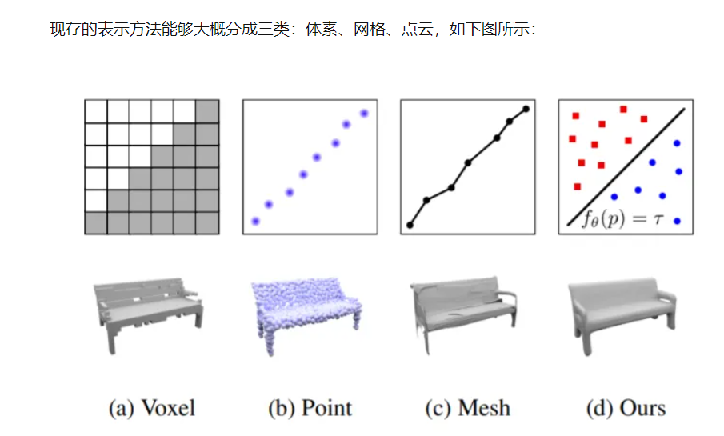
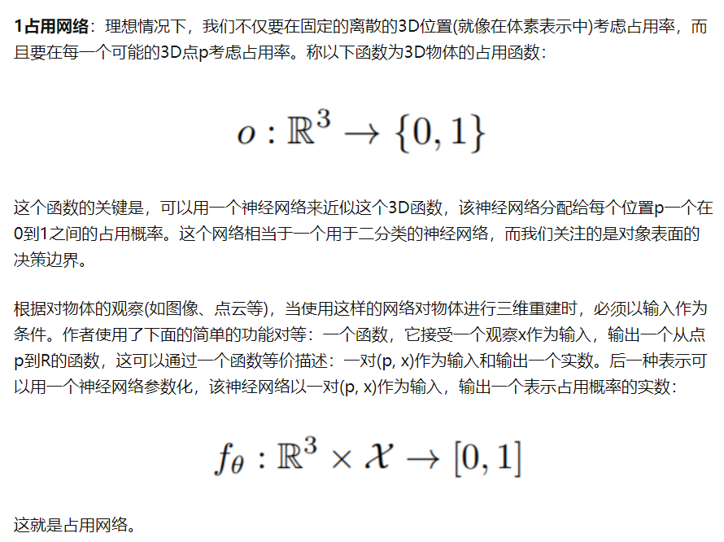
implicit differentiation：隐式微分法
为什么英文文献中的引文序号很乱？
因为它们的写作顺序是：边看参考文献，然后将重要文献(大概率会参考的文献)收集整理好(这时已经开始编号)，在正式写作时，写到需要参考文献的地方就把相关文献的序号引进正文。
computer vision and graphics communities have made significant progress by doing sth
机器视觉和图形学领域
pathtracers：路径跟踪器(光线追踪器，光追)
路径追踪器
Another class of methods uses volumetric representations to address the task of high-quality photorealistic view synthesis from a set of input RGB images
致力于达到、来解决
While these volumetric techniques have achieved impressive results for novel view synthe- sis 有趣的表达
取得了令人印象深刻的结果
PDF 翻译器
有道文档翻译：得花钱，每篇文档 5 元
Zotero
市场容量分析方法
遗传模型：从粗到精（黑屋子里上厕所）
先估算
feeding those locations into an MLP to produce a color and volume density
将这些位置输入 MLP 以产生颜色和体积密度
什么是 ReLU
ReLU 函数：线性整流函数（Linear rectification function），又称修正线性单元，是一种人工神经网络中常用的激活函数（activation function），通常指代以斜坡函数及其变种为代表的非线性函数。
人工神经网络中的激活函数是什么？
神经元中的非线性单元
non-Lambertian effects：非朗伯效应
什么是朗伯效应
整理 markdown 基本语法
Markdown 基本语法 | Markdown 官方教程
梳理文献整理规则
记录、问题、整理
MVS 和 SFM
MVS：multi view system；从多视图的密集重建
现有 3D 人体模型的缺点
没有骨骼蒙皮：得到人体 3D 模型之后还需要加 rig，太麻烦。而且还需要手工调整表面纹理贴图。 和现有商业软件不兼容。
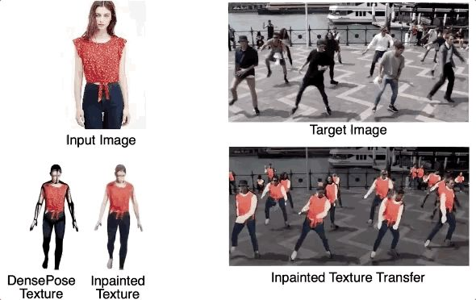
从 2D 关节预测 3D 关节，利用学习的 3D 骨架库，使用不同程度的先验。找到并下载相关论文
假定四肢长度，或比例
参考 3DDFA，3D 人脸可看做是形状和表情的和，其中 3D 形状模型可基于BFM 模型，通过 3DMM（3D Morphable Model）系数来构建，而 3D 表情模型可FW 模型构建。二者之和再通过 Pose(姿态角，平移，尺度)参数投影到摄像机坐标系下，即得到 3D 点云的图像坐标。需要注意的是，BFM 模型的点云数约为 53490, FW 表情模型的点云数约为 53215，因此二者不能直接相加，需首先对 BFM 模型的点云进行筛选，仅从中提取 53215 个点（貌似是去除了嘴巴内部的点），同时修正相应的网格(triangles)，这部分工作也是 3DDFA 团队的贡献。
通过 BFM 形状模型和表情模型，可以得到最终的 3D 点云的图像坐标(共 53215 个)，每个点有 x,y,z 3 个坐标，共有 53215x3 个值，这些点云中的 68 个点 x,y 坐标即为常用的 68 个人脸关键点，约 40k 个点的 x，y 坐标即为密集人脸关键点。因此，本文的目标就是从单张 2D 人脸 RGB 图像中直接预测这约 53k 的点的 3 维坐标值。一个简单且普遍的是用一个 1D 向量来表示，即将 3D 点信息用一个向量来表示，然后用网络预测；然而，这种方法丢失了空间信息。
相关研究中也有预测 3DMM 等模型的系数，然后同坐模型建模来得到 3D 点云，但这些方法太过依赖 3DMM 模型，并且流程复杂；最近的 VRN 用 Volumetric 来表示，成功摆脱了上述问题，但是其网络需要输出 192x192x200 的一个 Volume，计算量相当大，重建分辨率将会受到限制。
针对这些问题，作者非常巧妙地将 53215x3 个值用一个 3 通道 256x256 的图像来表示，即 UV position map 来表示，如下图
扫描仪
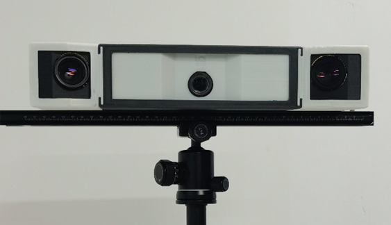
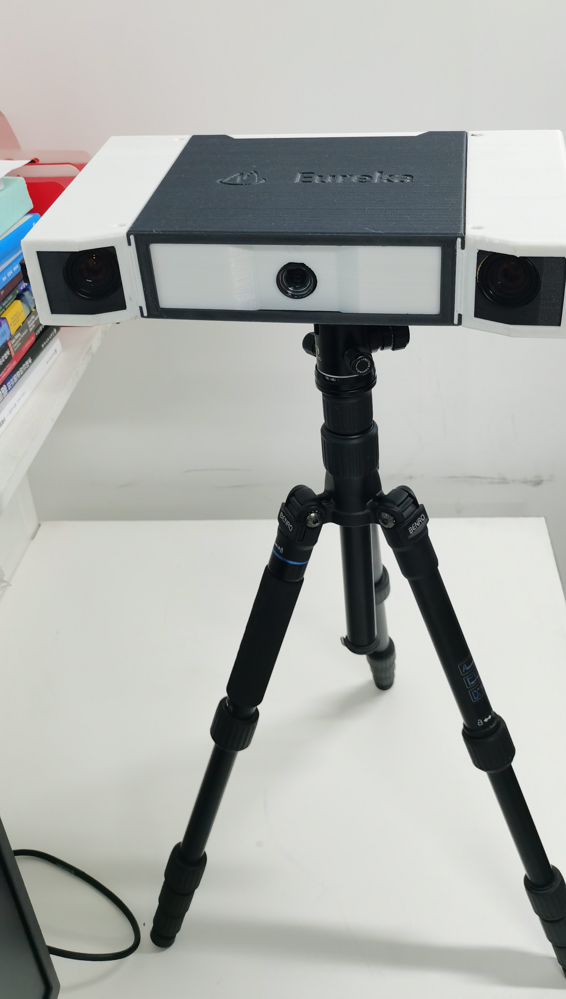
软件
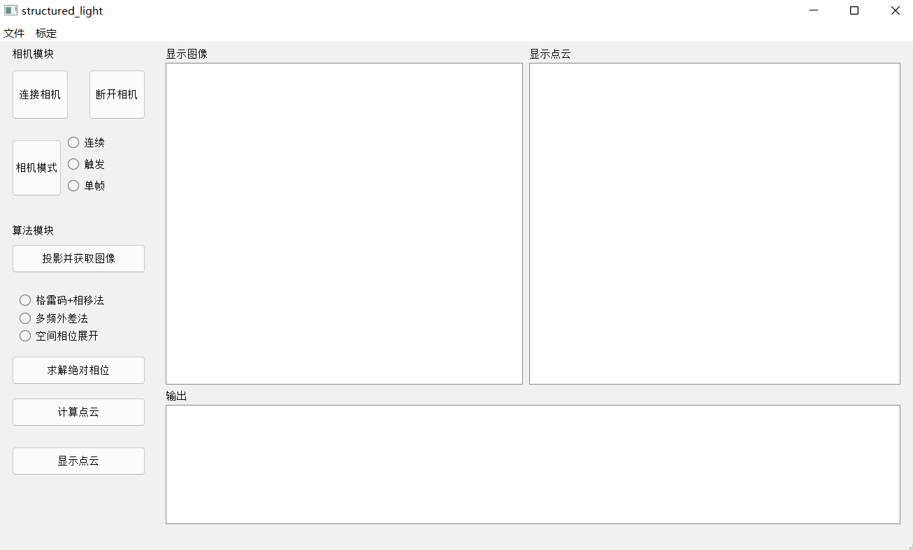
重建结果
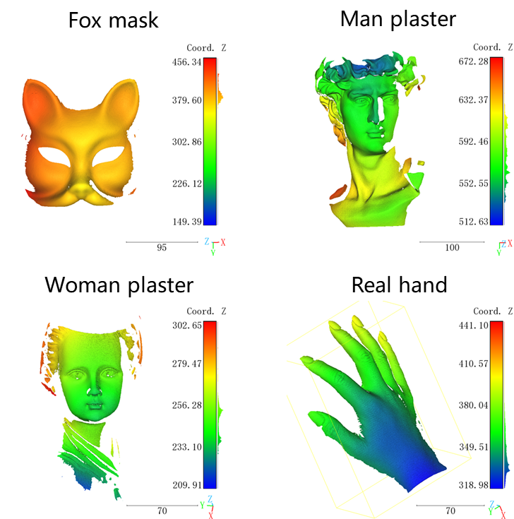
关键技术指标
针对目前多相机多投影测量方法存在分时投影效率低或重叠图像难于分离的问题，本项目 提出多投影仪同时投影多相机同时成像而无需分离重叠图像的快速多相机-投影测量方法。本 方法基于无线通信领域的多径效应原理，分析多投影结构光系统重叠信号的特征，探讨混叠信 号与物体的深度之间的相关性，利用高动态范围成像技术提高成像质量，实现从混叠信号中直 接获取物体的三维信息，为物体的快速、准确全景三维测量提供一种高效的方法。在本项目研 究结果的基础上，开发一套适合静态及动态物体的准确三维测量系统。该系统可应用于工业检 测、三维建模、3D 打印、虚拟现实、文物数字化等众多领域，因此，本项目研究具有重要的理 论意义和重大实际应用价值。
研究多相机多投影系统的相互标定，研究重点是如何提高多机标定的标定精度
研究相机自标定技术，研究重点是如何实现快速、简易、高精度的相机标定
研究可进行实时重建的结构光系统，研究重点是如何设计高效且鲁棒的编解码策略，以及如何设计高效的编解码程序
研究结构光系统和双目立体视觉系统的结合，实现对中场景的实时三维重建
结构光
集成度：一体化、小型化
性能：实时、0.02mm-0.1mm
技术成熟度：稳定性不足
人们对轻度清洁的需求程度
轻度清洁的市场规模
现有擦鞋机多安置在酒店、办公楼等公共场所，家用擦鞋机很少，为什么很少？
擦鞋机多用于公务用鞋，特别是皮鞋，是办公场景下针对商务人士提供的便利性产品
智能鞋底清洁机
解决换鞋套的痛点（痒点）
洗鞋机很多
我们能不能做一款不一样的洗鞋机，不去强调轻度或重度清洁，就是每日清洁（表面擦拭、全身水洗可选（智能建议功能））
产品形态
懒人经济悄然崛起：洗鞋机两个月线上零售 3000 万
轻度清洁市场可以约等于洗鞋机市场，甚至会大于洗鞋市场
因为只要我们的清洁能做到表面清洁 + 内部杀菌除臭，其实就基本上等于对鞋做了一次完整清洁
使用典型反推法预测市场规模：从京东 + 淘宝洗鞋机销售额预测洗鞋机
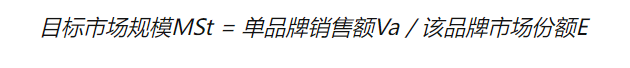
单月销售额：
京东：3381384+708695+338366+27886+69838+43833+69923+40819=117 万
奥克斯的市场份额：预估为 10%
曾是格力“眼中钉”，如今业绩大跌，“价格屠夫”奥克斯怎么了
其他方法预测市场规模
平均市场规模
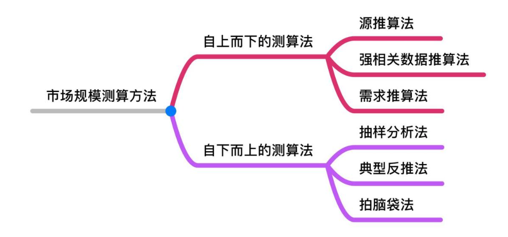
We leverage these findings in the context of neural scene representations
我们在……领域充分利用这些发现
SMPL：人体可以理解为是一个基础模型和在该模型基础上进行形变的总和
在形变基础上进行 PCA，得到刻画形状的低维参数——形状参数（shape）
得到 APP - 知识就是力量，知识就在得到。人工智能未来 8 大趋势
全体 IT 巨头将重兵布局AI 云服务，AI-a-a-S，意思是人工智能即服务，将成为未来趋势
人工智能将占领客厅，语音交互将成为主流电视应用
商用机器人将在特定的商业场景中发挥巨大潜力
2017 年，我们会在很多有一定特点的营业厅里，看到专业型机器人的身影。未来，热点会由专业型机器人向通用型机器人转变，通用型机器人将会迅速崛起。
为设计付费：今天的居住者越来越认可设计的价值，愿意为设计服务，甚至产品的设计感付费
追求整合与收纳：新居民们对收纳和空间整合的要求也在变高
扩张清洁功能区：新一代的居家环境里，清洁功能区正在前所未有地扩张。
有的住户家在二三线城市，空间没有那么紧张，还会干脆围绕洗衣机来设计一个万能家务区，跟厨房一样，三四平米。在这个万能家务区里，住户可以一口气把洗、烘、晾、晒、叠衣服的工作都做完。前面说的清洁家政柜，也可以整合在这里。这两年扫地、拖地机器人不是很流行么，新一批装修房子的住户们，在装修的时候也开始专门给这类清洁机器人预留空间和电源，甚至预留上下水管道了（引领趋势：玄关预留插座）
工业机器人的“四大家族”：瑞士的 ABB、德国的库卡、日本的发那科和安川电机一共四家
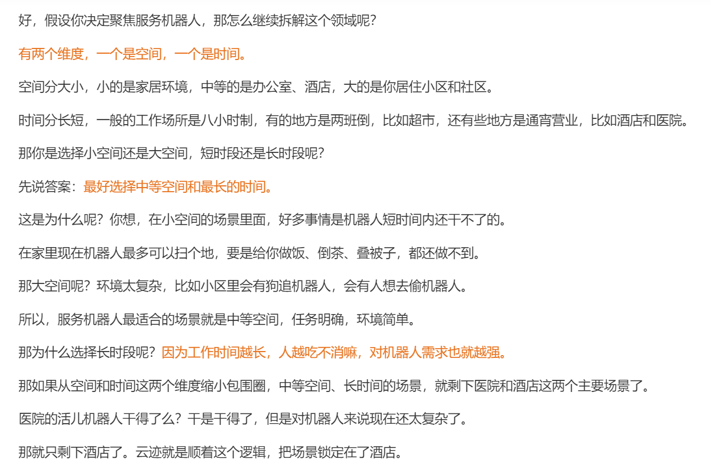
PS：云迹是拿着技术找需求（场景）
得到 APP - 知识就是力量，知识就在得到。后疫情时代，家居市场新趋势，《好好住 | 2022 家居消费趋势报告》：
健康主义
得到 APP - 知识就是力量，知识就在得到。为什么，小家电市场还要新品牌的机会？
科沃斯：科沃斯切的是“清洁小家电”，科沃斯的所有产品品类都叫，***机器人。
小家电制造业，似乎正在吃掉一部分本来留给 C 端服务业的市场
早餐机，吃掉的是包子铺的服务；美容仪，吃掉的是美容院的服务；扫地机器人，吃掉的是自己或者保洁阿姨提供的打扫卫生服务
中国供应链的制造能力提升得更快，消费者的这部分需求还没有来得及转化成大规模的服务业需求，甚至还没有主动诞生，就已经被制造业给开发出来、给抢走了
收纳行业！！！，智能收纳行业，几乎是一片空白
10 月 10 日-10 月 16 日
We draw inspiration from
从**中汲取灵感
需要有自己的一套逻辑、思路，其他的只能是借鉴
需要用到某个算法的时候在以引用的方法引入自己的体系 j
引言的作用
对现有研究的客观评述
提出问题
结构
第一段：问题的意义和重要性，同时引出问题
第二段：综述
把相关研究进行分类
文章标题
基于方法的特点，创造一个组合词
先聚焦到本题，我认为能够进入普通家庭的「家用机器人」必须满足以下 3 个条件
所以基于以上选择条件和目前市面上的产品，我认为能进入普通家庭机器人无外乎以下：
清洁机器人
扫地
「智慧家庭」机器人
将智能家居设备看作一个机器人
总结：
美国的机器人更倾向于军事应用，日本和韩国的机器人追求趋于完美型的类人型机器人，我们中国目前发展较为成熟的主要是工业机器人和家用型机器人。
总结：
家用机器人是为人类服务的特种机器人，主要从事家庭服务，维护、保养、修理、运输、清洗、监护等工作，种类可分为电器机器人、娱乐机器人、厨师机器人、搬运机器人、不动机器人、移动助理机器人和类人机器人
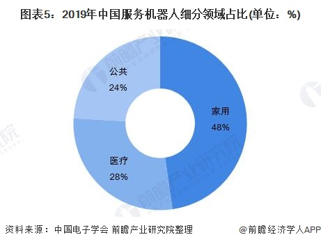
总结：
Note that Sth
请注意
We quantitatively (Tables 1) and qualitatively (Figs. 8 and 6) show that our method outperforms prior work
我们定量（表 1）和定性（图 8 和图 6）表明我们的方法优于以前的工作
We urge the reader to view our supplementary video to better appreciate sth
我们希望读者观看我们的补充视频以更好的体验……
10 月 17 日-10 月 23 日
OKR 中的“长短期并重”，那些需要很长时间才能达成的 O 如何被拆解？是不是存在这样一个时间维度里的 OKR
O：一年内，拿到天使轮融资
如果不存在这样一个“时间维度下的 OKR”那么上面列的这些事情应该如何被记录呢？
提升路线
优化系统标定参数
标准件：浅色棋盘格标定板、标准棋盘格标定板
相位高度映射的方法
使用高分辨率相机
重建精度的测量
提升路线
重建速度的测量
Flash 损坏
安装 J18 跳线帽，上电连接 USB
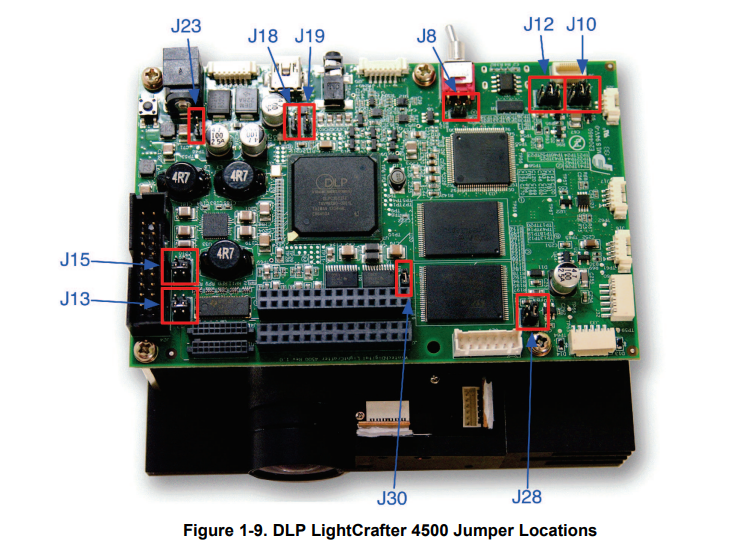
WIN10 系统将 DLPC350 设备识别成键盘
打开设备管理器，连接 DLP 后，找到新增的通用串行总线控制器
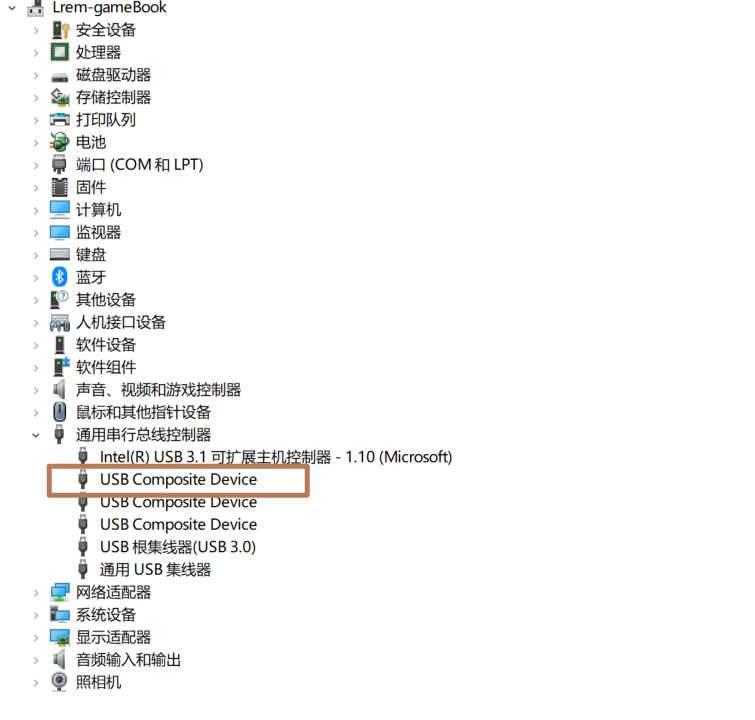
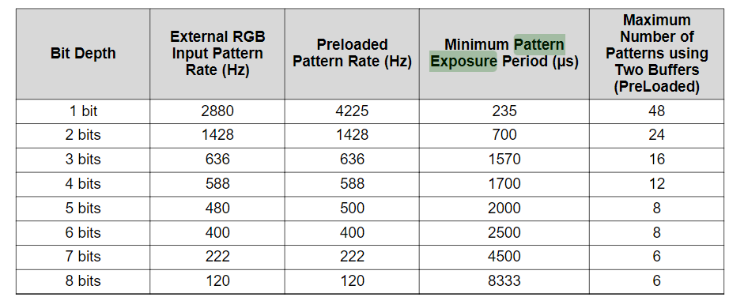
如果 img_num = 2 + 8 + 4 = 14
则（Pattern Exposure + Pattern Period）<=35714us
预设置
当 DLP LightCrafter 4500 配置为图案序列模式时，DLPC350 支持 1、2、3、4、5、6、7 和 8 位图像，分辨率为 912 列 × 1140 行。这些图像是像素精确的，这意味着每个像素对应于 DMD 上的一个微镜，并且不被任何视频处理功能处理。三个子选项卡控制 Pattern Sequence 设置：Sequence Settings、Pattern Sequence Start/Stop/Pause、Trigger Controls 和 LED Delay Control
一个 Pattern 序列由从闪存加载或通过 24 位 RGB 视频端口流式传输的多个模式组成。每个单独的模式都可以有一组特定的 LED 来照亮它，一个特定的位深度，以及一个内部或外部触发器。序列设置子选项卡允许用户定义和设置所有单独的模式设置。 Trigger Controls 子选项卡和 LED Delay Control 子选项卡分别设置触发和 LED 启用边沿时序。Pattern 序列开始/停止/暂停选项卡显示 Pattern 序列验证状态指示器，并允许用户播放、暂停和停止序列。图 3-5 显示了选择了 Pattern Sequence 选项卡的 DLP LightCrafter 4500 GUI。
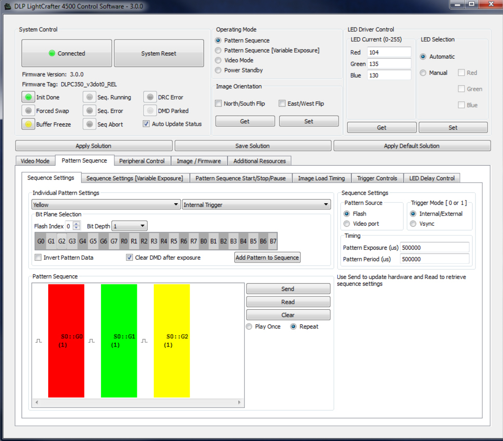
Pattern 序列显示来自以下两个输入源之一的图像（Pattern Source）：
为了使相机或外部系统与显示的图案同步，DLP LightCrafter 4500 支持一组触发输入和输出。这些输入和输出通过触发模式部分和触发控制子选项卡进行配置。触发模式选择触发输入，（Trigger Mode、Timing）选项卡内容：
500000/1000000 s = 0.5s
Pattern 序列可以是位深度模式与 LED 源的任意组合的任意组合。Pattern 序列可以播放一次或连续重复。允许的 LED 光源为：
要创建码型序列，请执行以下步骤：
```
1. 内部触发：有一个内部硬件信号输入到花样显示状态机（即控制器收到信号后开始显示）
无内部触发no internal trigger：选项将显示一个花样，无需等待触发；每个模式将与前一个模式继续显示。使用外部触发输入创建内部触发模式序列可能会导致意外行为
```
选择 Flash 索引（用于 Flash 模式源）或 Frame 索引（用于视频端口模式源）并设置模式的位深度
```
1. Flash索引：这是与 DLP LightCrafter 4500 上加载的固件捆绑在一起的闪存中的图像索引。可以通过将输入配置 > 源选择更改为来自闪存的图像，在视频模式下查看这些图像
注意：在模式序列模式下，一组图像被并行发送，而不是单个标准的 24 位 RGB 图像，并且发送 3 个 8 位图像（灰度）到 24 个单独的 1 位图像。序列中每个模式的颜色由将该模式添加到序列时选择的 LED 确定
请注意，如果使用视频端口，传入的图像分辨率必须为 912x1140
序列设置选项卡中的模式序列部分将模式序列显示为一组彩色矩形。颜色对应于使用的 LED。矩形上的条目代表图像源、位平面和位深度，如下所示： S0::G0 (1) 表示闪存位置 0，位平面 = G0，位深度 = 1。 F2:: G5(3)表示第 2 帧，bit-plane = G5，bit-depth = 3。例如，在图 3-5 中，显示了三个 pattern 的 pattern 序列。每个模式每 500 毫秒触发一次并暴露 500 毫秒。第一个图案是使用来自闪存位置 0 的位平面 G0 的 1 位红色图案。第二个图案是使用来自闪存位置 0 的位平面 G1 的 1 位绿色图案。第三个图案是一个 1 位黄色图案使用来自闪存位置 0 的位平面 G2。
模式之间的脉冲图标表示模式之间需要触发。右键单击此图标可以移除触发器，因此两个或多个图案可以共享同一个触发器并在总曝光时间内按顺序曝光。右键单击图案可以选择反转图案、移除图案或通过在曝光时间后清除 DMD 来插入黑色图像。
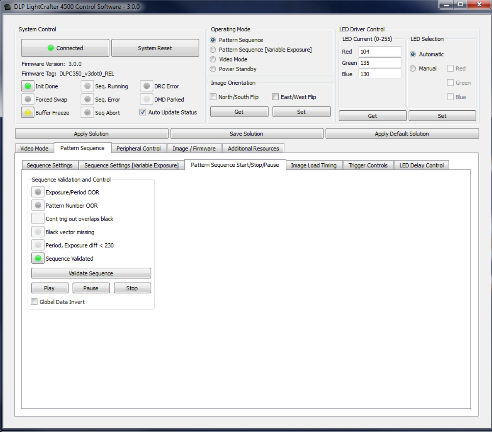
图 3.6 Pattern 序列模式：开始、暂停、停止
投影仪触发相机，可参考 dlpu011f.pdf
相机接受外部触发，可参考？？？
相机触发投影仪，可参考？？？
投影仪接收外部触发，可参考 dlpu011f.pdf
DLP LightCrafter 4500 包含一个基于 QT 的 GUI 应用程序，可通过 USB 接口控制模块。 QT 是一个诺基亚跨平台应用程序和用户界面框架，具有开源和商业许可证。要安装 QT GUI，只需将 LightCrafter4500_GUI.zip 文件展开到一个目录中，然后双击可执行文件。 DLP LightCrafter 4500 支持三种主要操作模式：:
视频模式显示来自：
通过 mini-HDMI 连接器的 DVI 输入
图案序列模式显示来自：
1-、2-、3-、4-、5-、6-、7 的图像- 和 8 位位图图像存储在闪存中
图案序列 [可变曝光] 模式显示来自与图案序列模式相同来源的图像：
存储在闪存中的 1、2、3、4、5、6、7 和 8 位位图图像
执行 LightCrafter4500.exe 文件后，将显示如图 3-1 所示的窗口。 GUI 窗口包含以下两个部分
在任何 GUI 部分中，单击“Get”按钮将读取该特定子部分的当前设置。单击“Set”按钮对相应小节中的设置进行编程。在更新 GUI 显示之前，某些命令可能需要额外的步骤。
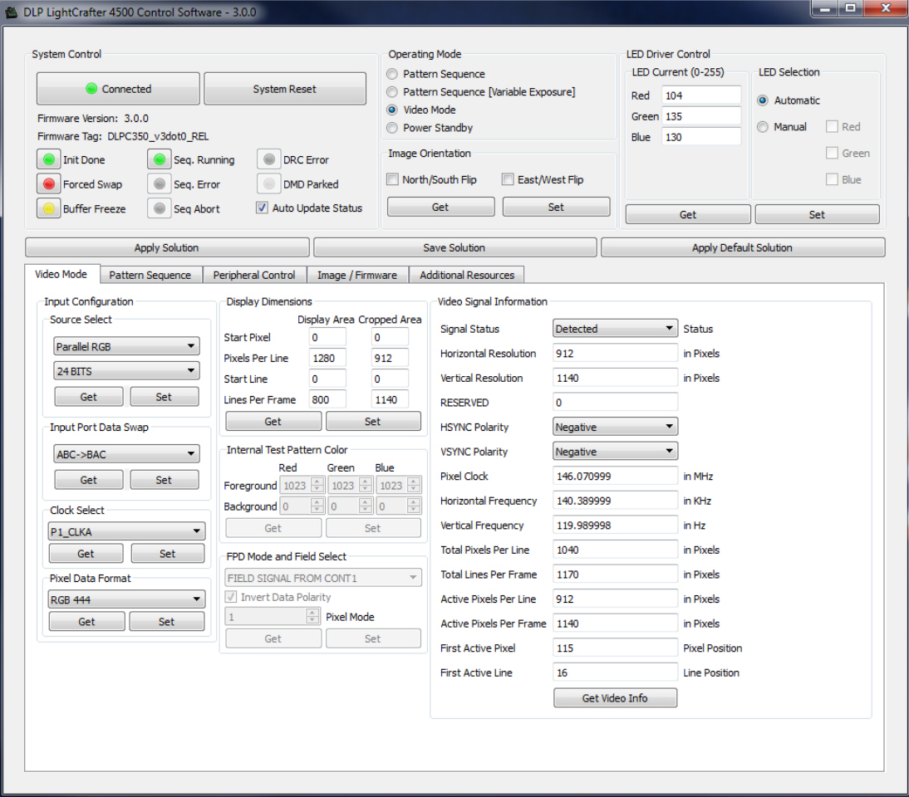
图 3-1。 DLP LightCrafter 4500 GUI – 视频模式
DLP LightCrafter 4500 GUI 使用 USB 1.1 与 DLPC350 通信。 DLPC350 模拟为支持 HID 的 USB 设备。 PC 轮询所有 HID 外围设备，一旦 PC 检测到 DLPC350，Connected 按钮将变为绿色。如果 USB 电缆断开，已连接按钮的颜色变为红色，已连接文本变为灰色。一旦系统状态显示已连接，就会显示固件版本、固件标签、硬件和系统状态指示器。无需按下 Connected 按钮，因为 HID 外围设备在 USB 枚举后被操作系统检测到
在 GUI 窗口的左上角，硬件和系统状态指示器报告以下内容：
这些指示灯每 2 秒更新一次，或者在向 DLPC350 发出命令时更新。
在系统状态右侧，操作模式设置 DLP LightCrafter 4500 的操作方式：
Pattern 序列模式：DLPC350 从以下接口之一获取 1、2、3、4、5、6、7 和 8 位数据：
24 位 RGB 接口
不应用任何视频处理功能，并提供像素精确模式，其中每个像素都映射到 912 × 1140 的原始 DMD 分辨率
Pattern 序列 [可变曝光] 模式：DLPC350 从以下接口之一获取 1、2、3、4、5、6、7 和 8 位数据：
24 位 RGB 接口
该模式与图案序列模式的不同之处在于图案曝光时间和图案周期可以在图案序列中的每个图案中变化。 DLPC350 不应用任何视频处理功能并提供像素精确模式，其中每个像素都映射到 912 × 1140 的原始 DMD 分辨率
视频模式：DLPC350 从以下接口之一获取 24、20、16、10 和 8 位数据
24 位 RGB 接口
然后，DLPC350 应用视频处理功能，例如缩放、伽马校正和色坐标调整，并将处理后的图像发送到 DMD
NOTE：如果 DLP LightCrafter 4500 与 USB 断开连接并重新连接，则操作模式可能无法反映它刚刚工作的模式。当模式在发送到 DLP LightCrafter 4500 之前未完全验证时，可能会在模式序列模式中发生这种情况
在操作模式下，图像方向控制长轴和短轴翻转以支持前、后、桌面和天花板安装投影。图像方向发生在视频模式下的下一个图像或帧加载时，以及模式序列模式下下一次下载到 DLP LightCrafter 4500 时。
在 GUI 窗口的右上角，LED 电流设置控制红色、绿色和蓝色 LED 的各个电流。设置为 255 对应于最大 LED 电流。设置为 0 对应于最小 LED 电流。 LED 电流计算如下：
红色 LED 电流 (A) = 0.0175 × (LED 电流值) + 0.4495 (1)
绿色 LED 电流 (A) = 0.0181 × (LED 电流值) + 0.3587 (2)
蓝色 LED 电流 ( A) = 0.0160 × (LED 电流值) + 0.1529 (3)
红色、绿色和蓝色 LED 的典型性能分别如图 2、图 3 和图 4 所示。制造过程会导致 LED 亮度和电流消耗的变化。实际 LED 性能可能与下图中显示的有所不同
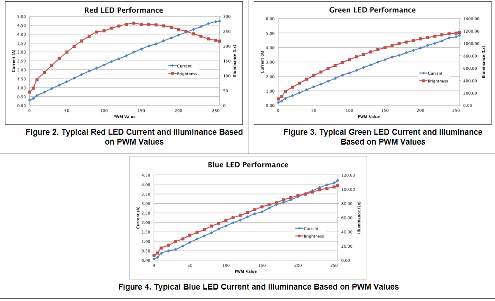
小心 DLP LightCrafter 4500 是一种主动冷却系统，它具有热限制，可导致 LED 连续运行的同时红色、绿色和蓝色 LED 总电流小于 4.3 A。在长时间和同时使用 LED 时，不要通过以最大功率打开所有 LED 来使系统过热。连续或同时运行 LED 超过 4.3 A 会损坏 DLP LightCrafter 4500 LED。
LED 制造中的典型变化会导致亮度和电流消耗的变化。因此，对于典型的白平衡点，TI 建议使用以下颜色百分比：
默认 LED 电流值为：
LED 选择框确定 LED 启用信号的控制。有两个选项：
略
略
在 Pattern Sequence [Variable Exposure] 模式下操作时，使用此子选项卡设置序列设置。所有部分都与“序列设置”子选项卡相同，除了“模式曝光时间”和“模式周期”现在基于每个模式设置，而不是为序列中的所有模式设置相同的值。
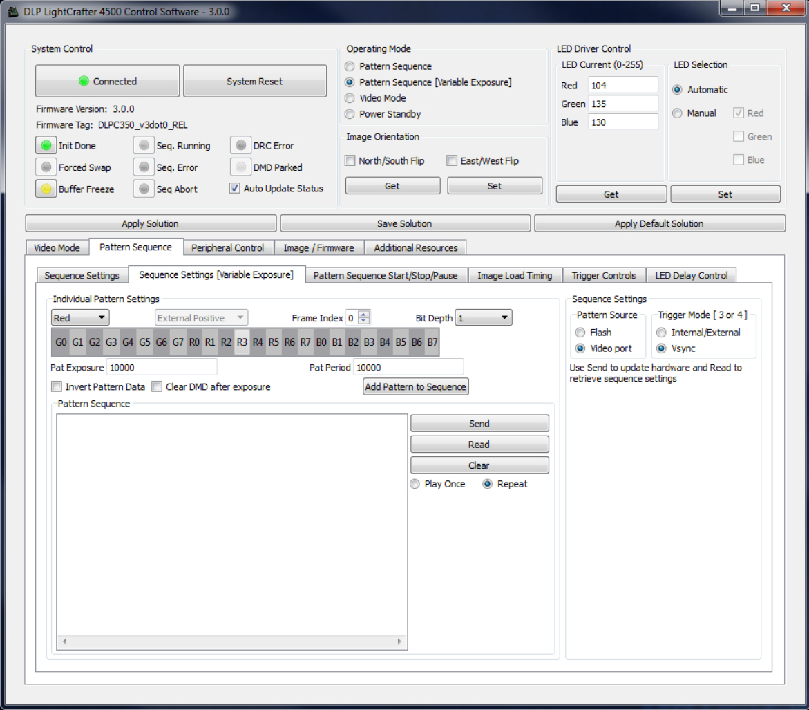
图 3-7。图案序列模式 - 可变曝光
该子选项卡即时计算 DLPC350 从闪存加载完整的 24 位 RGB 位图所需的时间。这种测量是瞬时的，不是平均时间，也不是最坏情况下的时间。要获得瞬时测量值，请执行以下步骤：
DLPC350 解压缩存储在图像索引位置的 24 位 RGB 位图，并将其加载到内部缓冲区。此过程所需的时间以毫秒为单位显示。此功能会覆盖当前显示缓冲区中的图像。
典型的时间是 200 毫秒。从闪存加载图像后，24 位字段驻留在帧缓冲区中，并且可以以更高的速度进行排序。 DLPC350 提供两个 24 位字段显示缓冲器。如果模式序列使用两个以上的图像（48 位字段），则需要大约 200 ms 将新图像加载到 DLPC350 内部显示缓冲区中
14 张 8bit 图片需要 5 张 24 位位图(5>2)，则需要额外 200ms 的图片加载时间
Trigger Controls 子选项卡设置极性并调整触发输入和输出的上升沿和下降沿延迟，请参见图 3-9。可以使用以下触发控件：
TRIG_IN_1:
Trigger 1 In Delay：设置 DLPC350 TRIG_IN_1 信号的上升沿延迟，与 DMD 上的码型显示相关。每个数字增加 107.136 ns。 GUI 允许的延迟范围介于 0 μs 和 28084.95 μs 之间，但有关如何扩展延迟范围的更多信息，请参阅 DLPC350 程序员指南 DLPU010
TRIG_OUT_1：
Trigger 1 Out Rising Edge Delay：设置 DLPC350 TRIG_OUT_1 信号的上升沿延迟，与 DMD 上的模式显示相关。每个数字增加 107.136 ns。范围为 –20.05 μs（图案曝光前）至 +2.79 μs（图案曝光后）延迟。
TRIG_OUT_2
Trigger 2 out Rising Edge Delay:：设置 DLPC350 TRIG_OUT_2 信号的上升沿延迟，与 DMD 上的模式显示相关。每个数字增加 107.136 ns。范围为 –20.05 μs（图案曝光前）至 +7.29 μs（图案曝光后）延迟。
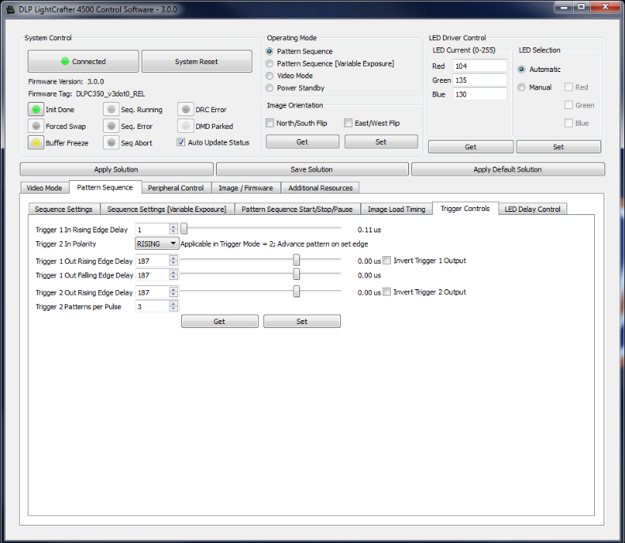
触发输出信号为：
信号示例如图 3-10 和图 3-11 所示。
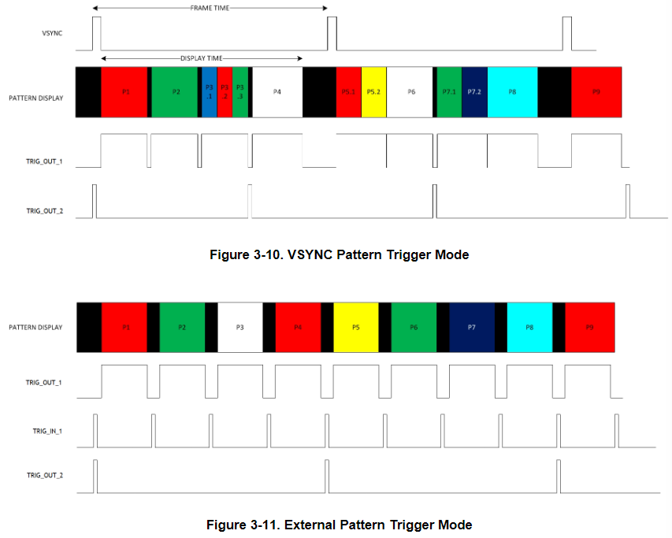
触发延时和 LED 延时，共同控制着投影仪投图的时序
在 Pattern Sequence 模式下，LED Delay Control 子选项卡（参见图 3-9）设置 LED 使能信号相对于 DMD 上的模式显示的上升沿和下降沿偏移。红色、绿色和蓝色 LED 使能信号的上升沿和下降沿可在 –20.05 μs（图案曝光前）至 +7.29 μs（图案曝光后）延迟之间独立更改。当 DLP LightCrafter 4500 在视频模式下运行时，将这些延迟设置为 0 (–20.05 μs)。
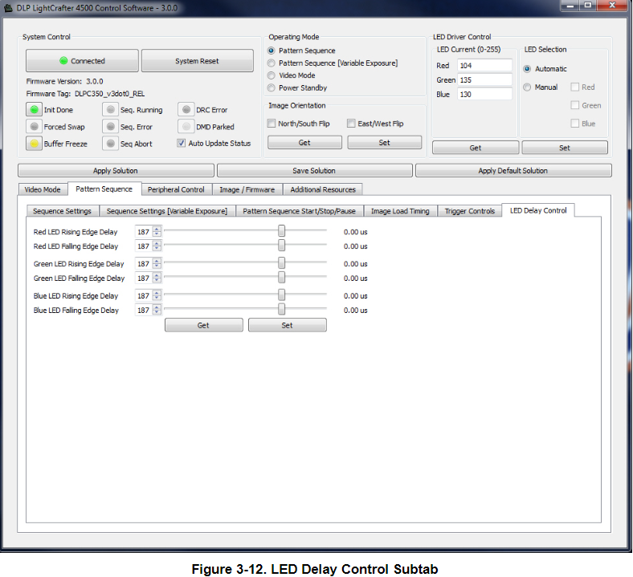
DLP LightCrafter 4500 GUI 允许现场更新 DLPC350 固件。要更新 DLPC350 固件，请执行以下步骤 图 3-13
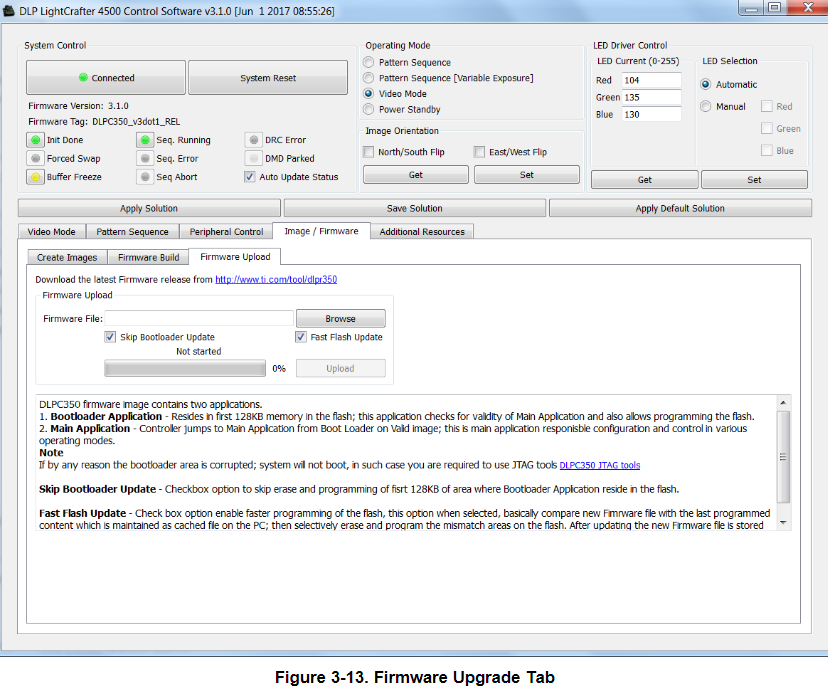
LightCrafter 4500 允许将图像压缩并存储到 32 MB 闪存中。为了最有效地存储和压缩图像，存储的图像被打包成 24 位 RGB 位图图像组，并在从闪存加载时即时解压缩。为了简化任何位宽图像的打包，LightCrafter 4500 GUI 提供了 Create Images 子选项卡，请参见图 3-14。要从不同的多位深度图像创建 24 位图像，请执行以下步骤：
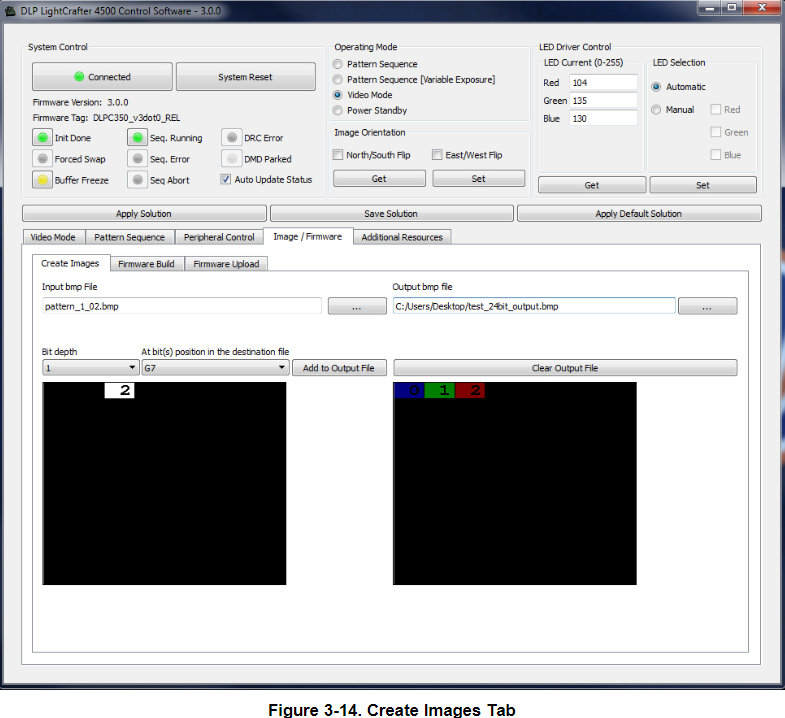
在这些选择下方，左侧窗口显示输入文件的预览。右侧窗口显示 24 位输出文件的预览，该文件已获取所有输入文件并根据请求的位平面位置对添加的图像进行位加权。在位位置 B0 到 B7 添加的图像显示蓝色，位位置 G0 到 G7 显示红色，位位置 R0 到 R7 显示绿色。这是因为 DLPC350 显示顺序是 GRB（请参见 DLPC350 程序员指南中的表 2-69，模式编号映射），而 BMP 图像存储为 RGB。对于每种颜色，位位置 0 是最低有效位，而位位置 7 是最高有效位。要将映像下载到闪存中，必须使用Firmware Build子选项卡将一系列 24 位映像添加到固件文件中，步骤如下：
单击保存更新后，所有 24 位图像都被压缩并打包在一起。由于 24 位图像的打包，图像的数量可能与下拉列表中的数量不同。
DLPC350 提供多个可配置引脚。 GUI 的 Peripheral Control 选项卡控制这些引脚的配置方式。以下选项可用
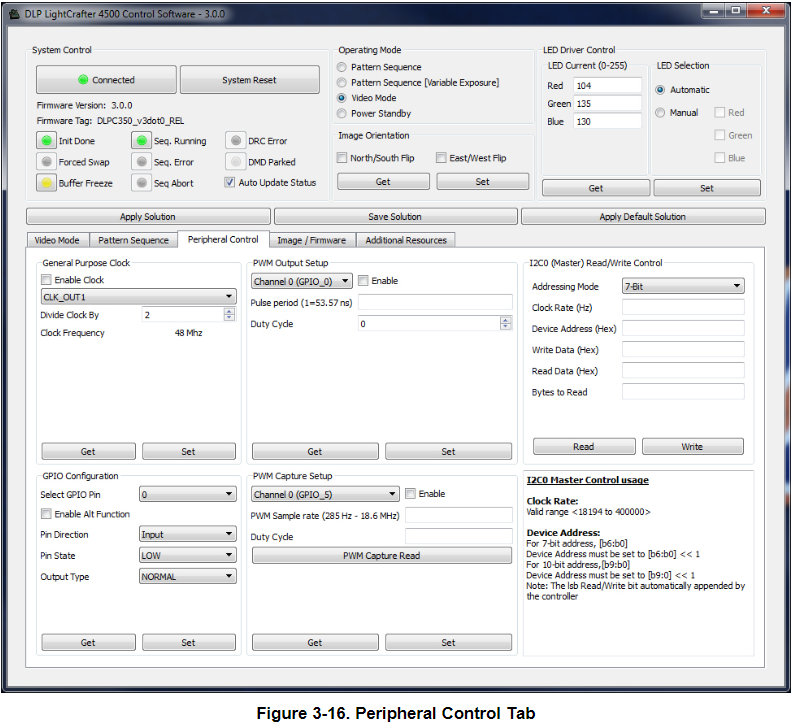
本章介绍 DLP LightCrafter 4500 模块支持的模式序列
参考：
安装 Pleora 驱动程序
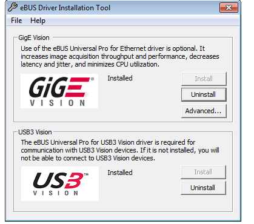
与 USB3 Vision 设备和主机控制器相关的警告和错误可能会出现在设备选择对话框的右侧面板中。例如，如果您已将 USB3 Vision 设备连接到 USB 2.0 端口，则可能会出现警告。
参考：用户手册
参考：Data-Sheet
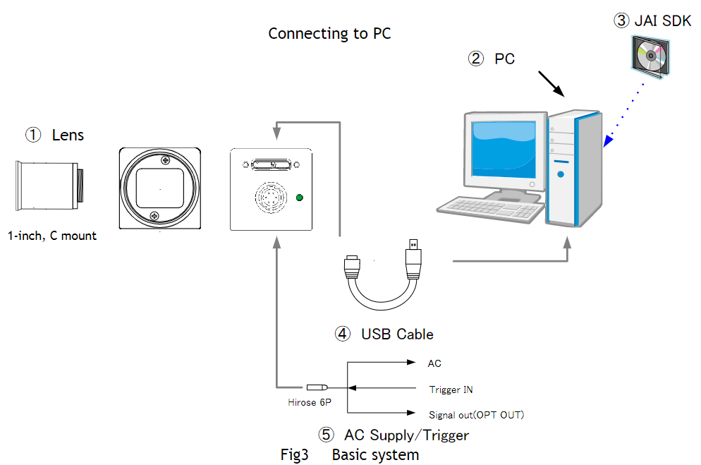
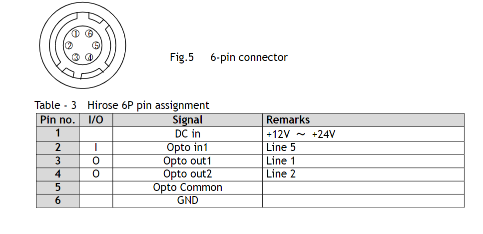
通过触发选择器、触发模式、曝光模式和触发选项的组合，可以使用以下 5 种触发控制：
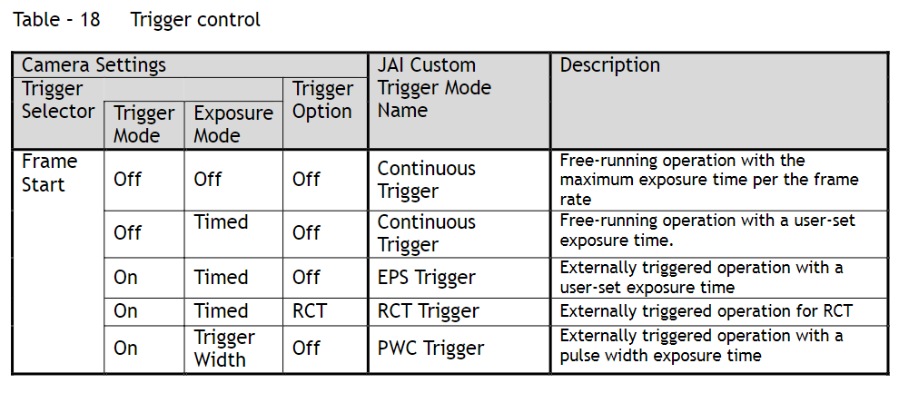
建议使用：后三种
选择触发操作。在 GO-5000-USB 中，可以选择以下触发操作作为触发。
每个触发器选择都有自己的设置。因此，有必要在每个选定的触发器上设置以下项目。
选择自由运行操作或外部触发操作。
以下信号可用作触发源信号
该命令可以选择如何激活触发器。
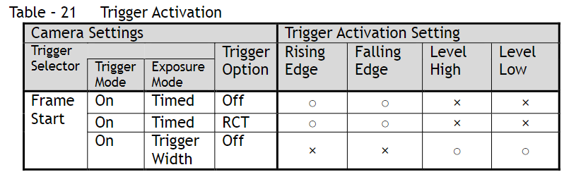
最小帧间隔
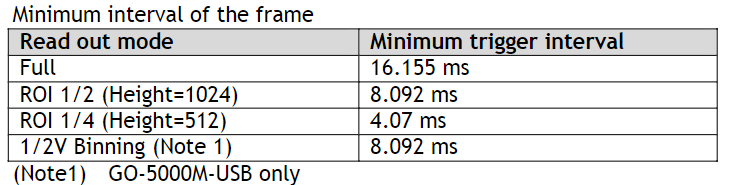
参考：Bringing fast, accurate 3D scanning into embedded applications
TIDA-00254 参考设计 | 德州仪器 TI.com.cn
参考：使用 DLP® LightCrafter™ 4500 触发器将相机与图案同步
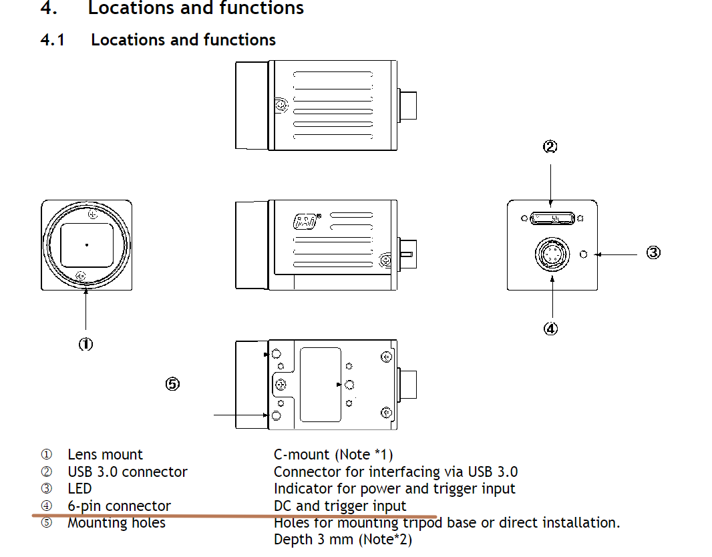
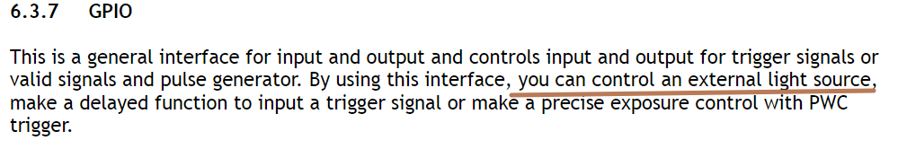
注意事项：
图 7 显示了将 DLP LightCrafter 4500 设置为在图案序列上触发相机的示例。请注意，在操作模式下，图案序列按钮已被选中。这会自动打开模式序列/序列设置选项卡。对于此插图，已创建模式序列并将其发送到 DLP LightCrafter 4500。在序列设置下，模式源设置为闪烁，触发模式已设置为内部/外部。图案曝光 (μs) 已设置为 33333 μs，它设置了连续图案之间的周期。该周期导致大约每秒 30 帧的模式速率。重要提示：如果希望图案曝光 (μs) 小于图案周期 (μs) 并且未检查曝光后清除 DMD，则必须将图案曝光 (μs) 设置为比图案周期 (μs) 短多于 230 微秒。如果不满足此要求，则该模式将不会运行。控制软件通过点亮周期旁边的信号器来指示错误，曝光差异 < 230 在图案序列开始/停止/暂停选项卡中。触发输出 1 信号高电平时间对应于图案曝光 (μs)。也就是说，触发输出信号将在触发周期内的曝光长度内有效。（Exposure Time）
实现：投影仪每投影一个 Pattern，输出一个与曝光时间等长的脉冲（曝光时间有效）

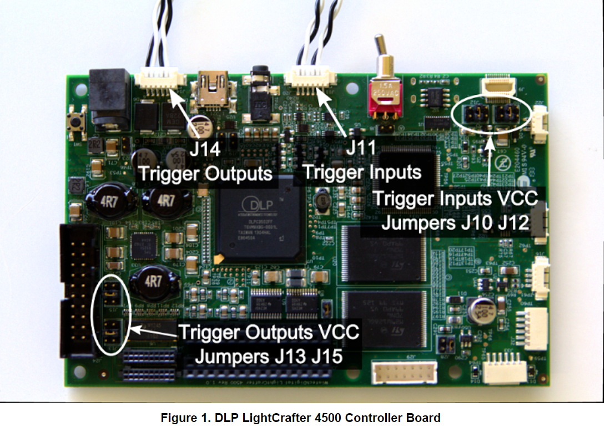
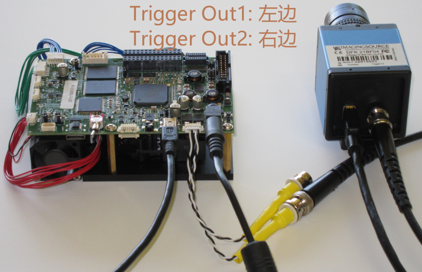
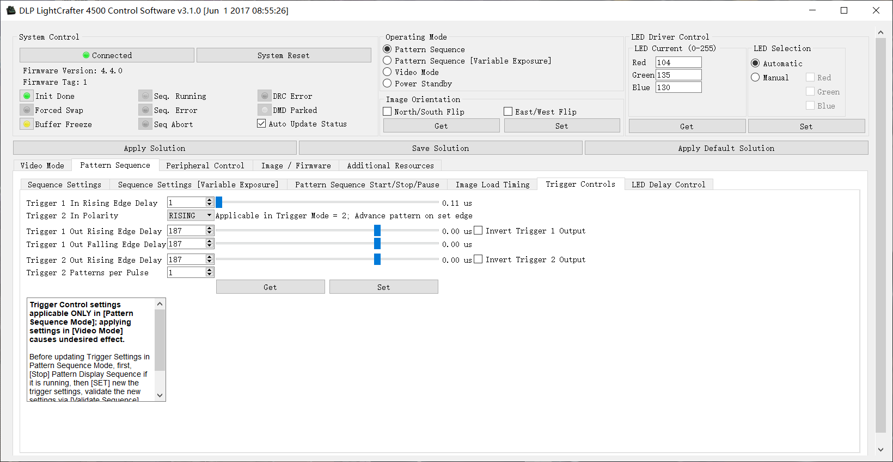
设置 Pattern 序列
Pattern Exposure：20000us
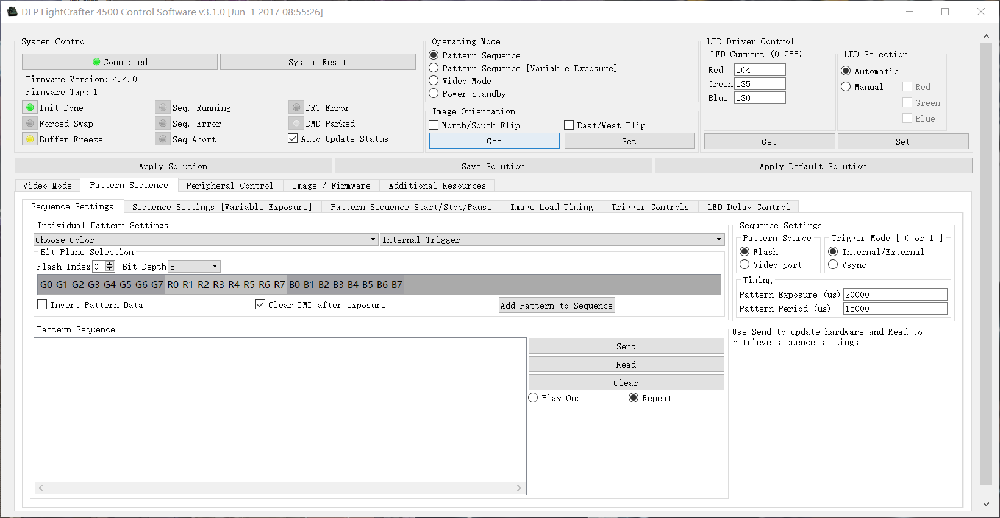
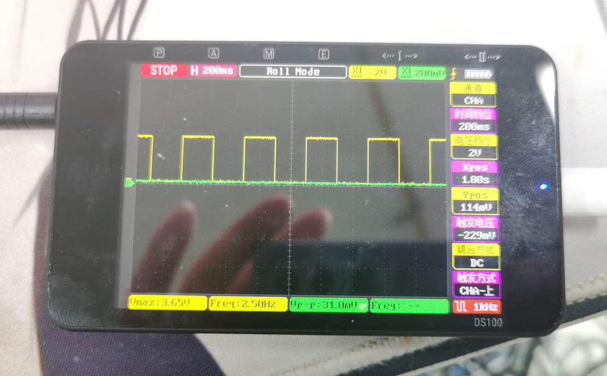
正确连接投影仪的触发输出和相机的触发输入，连线对应关系如下
DLP-J14-GND-黄色线 —— JAI 6-Pin -Opto Common
设置相机外触发模式
TriggerSelector: AcquisitionStart
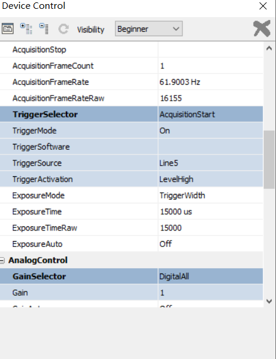
图片模式
14 张图模式下，现有硬件设备的最快重建时间：
Fast FrameRate = Min(4.2, 28.57) = 4.2fps
最快重建存在一个问题：投影仪 Flash 读速度跟不上，因为：
使用 1bit+8bit 的方案解决了该问题，可以实现 4.2fps 的扫描速度
编解码优化方式
参考：暂未找到 DLP350API 的帮助文档，建议从 GUI 的操作逻辑中分析 API 使用方法
需要了解的函数操作是
Individual Pattern Setting
光源设置：ChooseColor，White
Bit Plane Selection
Image Index（24 位图的索引）：0，1
Pattern Sequence
选择投影模式：连续（Repeat）、单次（Play Once）
Sequence Setting（预设）
Pattern Source：Flash
Timing
Pattern Exposure: 20000us
Trigger Controls
Trigger 1 Out Rising Edge Delay
Pattern Sequence Start/Stop/Pause
Validate Sequence：初次连接时使用
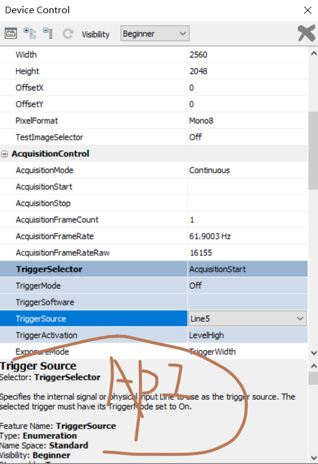
开始采集
创建 Stream、Pipeline 等
10.24-10.30
GetImg 耗时优化
同一个函数，不同电脑需要时间不一样，这是为什么
VS 中断退出时，执行 StopDisconnected
解决方案 1：在每次连接相机后，清空相机缓冲区。该方案无效
现象
单投图形式
numImages
numImage=用到的 Flash Image 数量
只需要 Send 所用到的图像 Image 的索引，numEntries 可以不等于 numPattern
用户需要通过控制 Buff swap 手动切换 flash image Index
用户不需要手动控制 Buff swap
用户仍然需要手动控制 Buff Swap【有些不合理】
只需要 Send 所用到的图像 Image 的索引，numEntries 可以不等于 numPattern
用户需要通过控制 Buff swap 手动切换 flash image Index
第一张图片：正常的黑色，[0,0,1]
第二张图片：奇怪的条纹，[1,1,1]
第三张图片：奇怪的跳舞，[1,2,1]
第四张图片：奇怪的格雷码，[0,0,8]
只需要 Send 所用到的图像 Image 的索引，numEntries 可以不等于 numPattern
用户需要通过控制 Buff swap 手动切换 flash image Index
第一次投影
第一张图片：略带条纹的白色，？？？？
第二张图片：奇怪的条纹，[1,1,1]
第三张图片：奇怪的跳舞，[1,2,1]
第四张图片：奇怪的格雷码，[0,0,8]
第二次投影
第一张图片：黑色，[0,0,1]
第二张图片：奇怪的条纹，[1,1,1]
第三张图片：奇怪的跳舞，[1,2,1]
第四张图片：奇怪的格雷码，[0,0,8]
只需要 Send 所用到的图像 Image 的索引，numEntries 可以不等于 numPattern
用户需要通过控制 Buff swap 手动切换 flash image Index
第一张图片：略带条纹的白色，？？？？
第二张图片：奇怪的条纹，[1,1,1]
第三张图片：奇怪的跳舞，[1,2,1]
第四张图片：正常的条纹，[1,0,8]
只需要 Send 所用到的图像 Image 的索引，numEntries 可以不等于 numPattern
用户需要通过控制 Buff swap 手动切换 flash image Index
第一张图片：略带条纹的白色，？？？？
第二张图片：奇怪的条纹，[1,1,1]
第三张图片：奇怪的跳舞，[1,2,1]
第四张图片：正常的条纹，[1,0,8]
合理的假设 1：第一张图片是否需要 Swap，与结果关系不大
需要 Send 所有 Pattern 对应的 image 索引，numEntries = numPattern
用户不需要手动控制 Buff swap
第一张图片：略带条纹的白色，？？？？； 第一张图片 有时又是黑色
第二张图片：正常的白色，[0,1,1]
第三张图片：正常的黑色格雷码，[0,2,1]
第四张图片：奇怪的格雷码，[0,0,8]
需要 Send 所有 Pattern 对应的 image 索引，numEntries = numPattern
用户不需要手动控制 Buff swap
第一张图片：正常的黑色，[0,0,1]
第二张图片：正常的白色，[0,1,1]
第三张图片：正常的黑色格雷码，[0,2,1]
第四张图片：正常的条纹，[0,2,8]
需要 Send 所有 Pattern 对应的 image 索引，numEntries = numPattern
用户仍然需要手动控制 Buff swap
第一张图片：正常的黑色，[0,0,1]
第二张图片：正常的白色，[0,1,1]
第三张图片：正常的黑色格雷码，[0,2,1]
第四张图片：奇怪的格雷码，[0,0,8]
为什么第四张明明 swap 了，却没有跳转？
需要 Send 所有 Pattern 对应的 image 索引，numEntries = numPattern
用户仍然需要手动控制 Buff swap
第一张图片：正常的黑色，[0,0,1]
第二张图片：正常的白色，[0,1,1]
第三张图片：正常的黑色格雷码，[0,2,1]
第四张图片：奇怪的格雷码，[0,0,8]
为什么第一张即使 swap 了也不跳转？
需要 Send 所有 Pattern 对应的 image 索引，numEntries = numPattern
用户仍然需要手动控制 Buff swap
第一张图片：正常的黑色，[0,0,1]
第二张图片：正常的白色，[0,1,1]
第三张图片：正常的黑色格雷码，[0,2,1]
第四张图片：奇怪的格雷码，[0,0,8]
需要 Send 所有 Pattern 对应的 image 索引，numEntries = numPattern
用户不需要手动控制 Buff swap
第一张图片：正常的黑色，[0,0,1]
第二张图片：正常的白色，[0,1,1]
第三张图片：正常的黑色格雷码，[0,2,1]
第四张图片：奇怪的格雷码，[0,0,8]
需要 Send 所有 Pattern 对应的 image 索引，numEntries = numPattern
用户需要手动控制 Buff swap
第一张图片：正常的黑色，[0,0,1]
第二张图片：正常的白色，[0,1,1]
第三张图片：正常的黑色格雷码，[0,2,1]
第四张图片：奇怪的格雷码，[0,0,8]
需要 Send 所有 Pattern 对应的 image 索引，numEntries = numPattern
用户需要手动控制 Buff swap
第一张图片：正常的黑色，[0,0,1]
第二张图片：正常的白色，[0,1,1]
第三张图片：正常的黑色格雷码，[0,2,1]
第四张图片：奇怪的格雷码，[0,0,8]
需要 Send 所有 Pattern 对应的 image 索引，numEntries = numPattern
用户需要手动控制 Buff swap
第一张图片：正常的黑色，[0,0,1]
第二张图片：正常的白色，[0,1,1]
第三张图片：正常的黑色格雷码，[0,2,1]
第四张图片：奇怪的格雷码，[0,0,8]
合理的假设 2：不能 Send 所有 Pattern 对应的 image 索引，只需要 Send 所需要的几张图片
必要的设置：flash_index[2] = {0,1}
只需要 Send 所用到的图像 Image 的索引，numEntries 可以不等于 numPattern
用户需要通过控制 Buff swap 手动切换 flash image Index
第一张图片：正常的黑色，[0,0,1] 好像第一张就进行了一次 Swap
第二张图片：奇怪的条纹，[1,1,1]
第三张图片：奇怪的跳舞，[1,2,1]
第四张图片：正常的条纹，[1,0,8]
只需要 Send 所用到的图像 Image 的索引，numEntries 可以不等于 numPattern
用户需要通过控制 Buff swap 手动切换 flash image Index
第一张图片：黑色，[0,0,1]
第二张图片：奇怪的条纹，[1,1,1]
第三张图片：奇怪的跳舞，[1,2,1]
第四张图片：奇怪的格雷码，[0,0,8]
合理的假设 3：无论第一张是否 Swap，程序都会自动将 Image 索引跳到下一张
只需要 Send 所用到的图像 Image 的索引，numEntries 可以不等于 numPattern
用户不需要通过控制 Buff swap 手动切换 flash image Index
第一张图片：黑色，[0,0,1]
第二张图片：奇怪的条纹，[1,1,1]
第三张图片：奇怪的跳舞，[1,2,1]
第四张图片：正常的条纹，[1,0,8]
猜想 1：第一张会自动 Swap，但后面几张不会，需要手动 Swap
numEntries 等于 numPattern
除了第一张，其余都需要 Swap
第一张图片：正常的黑色，[0,0,1]
第二张图片：正常的白色，[0,1,1]
第三张图片：正常的黑色格雷码，[0,2,1]
第四张图片：奇怪的格雷码，[0,0,8]
只需要 Send 所用到的图像 Image 的索引，numEntries 可以不等于 numPattern
除了第一张，其余都需要 Swap
第一张图片：正常的黑色，[0,0,1]
第二张图片：正常的白色，[0,1,1]
第三张图片：正常的黑色格雷码，[0,2,1]
第四张图片：奇怪的格雷码，[0,0,8]
只需要 Send 所用到的图像 Image 的索引，numEntries 可以不等于 numPattern
用户不需要通过控制 Buff swap 手动切换 flash image Index
第一张图片：黑色，[0,0,1]
第二张图片：奇怪的条纹，[1,1,1]
第三张图片：奇怪的跳舞，[1,2,1]
第四张图片：正常的条纹，[1,0,8]
合理的假设 4：numImage= 用到的 Image 数量
只需要 Send 所用到的图像 Image 的索引，numEntries 可以不等于 numPattern
第四张图片需要 Swap，第一张不需要
第二张图片：正常的白色，[0,1,1]
第三张图片：正常的黑色格雷码，[0,2,1]
第四张图片：奇怪的格雷码，[0,0,8]
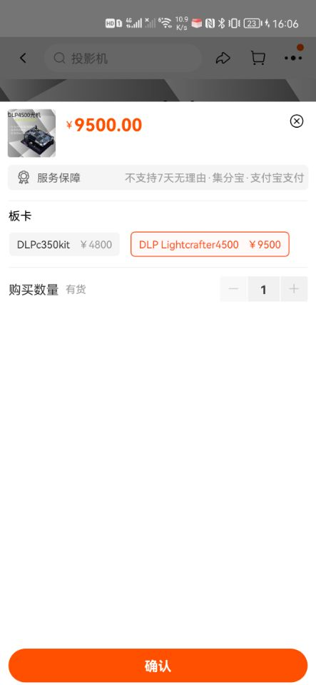
DLP 光学引擎 - 北京闻亭泰科(Wintech)技术发展有限公司
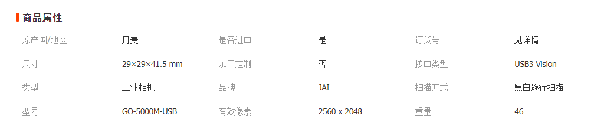
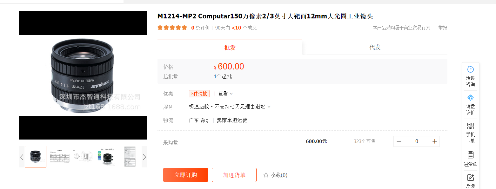
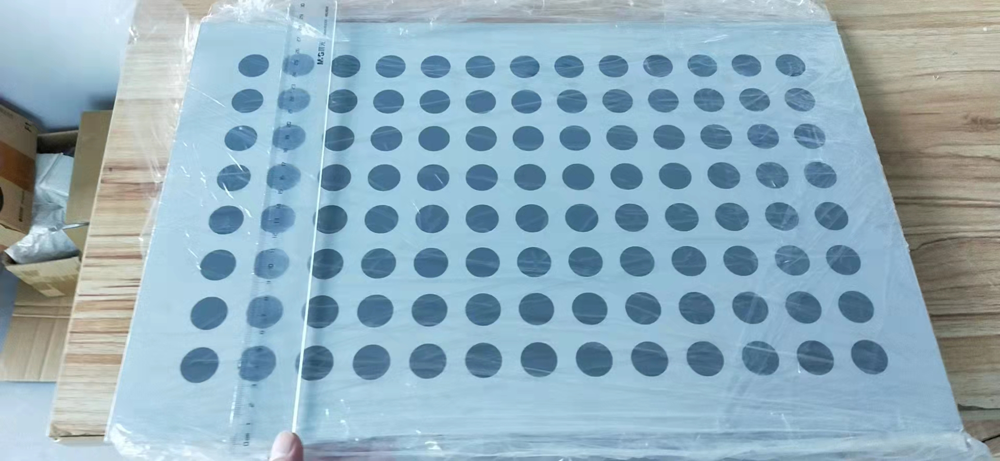

| 类别 | 型号 | 厂家 | 购买价格 | | ------------ | ---------------------------------- | ------------ | --------- | | 工业投影仪 | LCR4500 EVM | TI / Wintech | 9500￥ | | 工业相机 | JAI-GO-5000M-USB | JAI | 8100￥ | | 相机镜头 | Computar 12mm | Computar | 600￥ | | 标定板(浅色) | ~ | 桂庆光电 | 1700￥ | | 标定球 | 哑光面陶瓷标定球 25.4mm | 江南西道 | 2205￥ | | 其他配件 | 相机快装板夹座、触发线、固定三脚架 | | 150+500￥ | | 总计 | | | 22,755￥ |
想要咨询的产品：
PRO4500（1140*912）：基于 LightCrafter4500
PRO4500MV
PRO6500（1920*1080）
PRO6500s：产品在 Pro6500 的基础上进行了全面的需求评估改进而来
PRO4710（1920*1080）
PRO4710lc（1080p+437fps）：升级版本
10.31
DLPC350 软件用户指南
本章介绍 DLPC350 和主机处理器之间的接口协议。 DLPC350 支持两种主机接口协议：I2C 和 USB 1.1 从接口
DLPC350 控制器支持 USB 1.1 人机接口设备 (HID) 与主机处理器交换命令和数据。 USB 命令是可变长度的数据包，以最低有效字节在前发送。 DLPC350 根据 I2C_ADDR_SEL 引脚是高电平还是低电平，为 USB 枚举提供两种不同的字符串描述符。这两个字符串是“L”、“C”、“R”、“2”或“L”、“C”、“R”、“3”。 USB 供应商 ID (VID) 为 0x0451，产品 ID (PID) 为 0x6401
要发出命令请求 DLPC350 值，主机必须执行以下步骤：
主机发送标志字节，其中：
位 2:0 设置为 0x0 用于常规 DLPC350 操作，设置为 0x7 用于调试帮助
位 7 设置为 0x1，表示读取事务
主机发送序列字节。当单个命令超过 64 字节时，该命令作为多个 USB 数据包发送，并且序列字节对数据包进行编号，以便设备可以按正确的顺序组合它们。在其他情况下，该值无关紧要，一般设置为 0。
完成该命令后，DLPC350 会响应一个数据包，其中包括：
主机请求的命令字节（匹配序列字节）
要发出设置 DLPC350 值的命令，主机必须执行以下步骤：
主机发送标志字节，其中
位 2:0 设置为 0x0 用于常规 DLPC350 操作，设置为 0x7 用于调试帮助
位 7 设置为 0x1 以指示读取事务
主机发送序列字节。当单个命令超过 64 字节时，该命令作为多个 USB 数据包发送，并且序列字节对数据包进行编号，以便设备可以按正确的顺序组合它们。在其他情况下，该值无关紧要，一般设置为 0。
DLPC350 有两种操作模式：正常模式和编程模式。 A.3 节显示了编程模式命令。正常模式命令在程序模式下不起作用。本章列出了正常模式 DLPC350 控制命令。以下部分列出了 DLPC350 支持的控制命令。在 Type 列中，“WR”类型是可通过 I2C 或 USB 写入事务写入的字段。数据通过“WR”类型位的 I2C 或 USB 读取事务读取。类型 r 是只读的。将忽略写入只读字段的事务。以下所有命令表中的 Reset 列都是上电后的默认值。上电后这些值可能会被覆盖。
注意：保留位和寄存器。写入有效命令位字段时，所有标记为未使用或保留的位必须设置为 0，除非另有说明。
注意：命令写入期间的瞬时图像损坏。在某些情况下，某些命令可能会导致显示图像中出现短暂的视觉伪影。可以始终读取命令数据值而不影响显示的图像。为避免由于命令造成的瞬间图像损坏，请在命令写入之前禁用 LED，然后在发出所有命令后重新启用 LED。
注意：不推荐写入或读取未记录的寄存器
DLPC350 具有以下一组状态命令：
硬件状态
系统状态
主状态
检索固件版本
输入视频信号检测状态
（I2C：0x20）
（USB：CMD2：0x1A，CMD3：0x0A）
硬件状态命令提供有关 DLPC350 的定序器、DMD 控制器和初始化的状态信息。
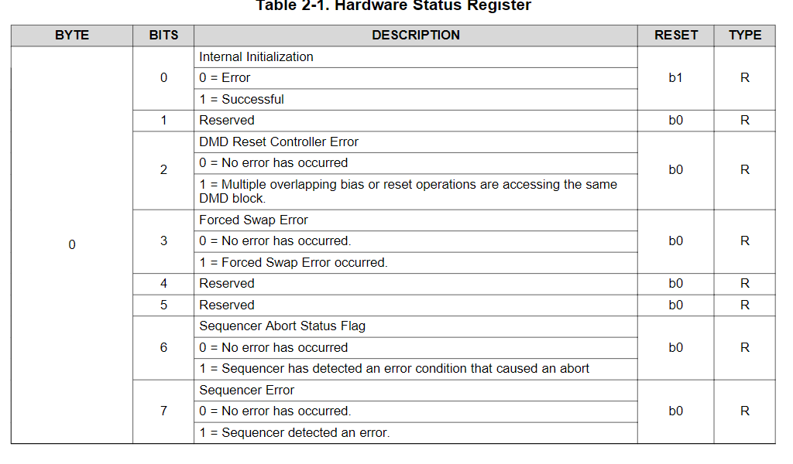
注意：任何错误情况都表示故障情况，必须予以纠正。
System Status 命令在内部存储器测试中提供 DLPC350 状态
建议添加系统状态检查
Main Status 命令显示 DMD 停放和 DLPC350 定序器、帧缓冲区和伽马校正的状态。
什么是伽马校正状态？因为 DMD 在响应中本质上是线性的，所以 Gamma Correction 命令指定移除应用于源视频数据的 Gamma 曲线。提供了两个 degamma 表：TI 视频（增强）和 TI 视频（最大亮度）。
此命令（固件版本 2.0.0 及更高版本支持）读取 DLPC350 固件的版本信息
执行此命令（固件版本 2.0.0 和更高版本支持）时，DLPC350 控制器会根据通过 I2C 命令 0x00 或 USB 命令 0x1A00 进行的视频端口选择返回输入视频信号时序信息。此命令适用于 RGB Parallel Interface 和 FPD-link 接口。在收到命令后，控制器会在报告信号状态之前监控信号约 200 毫秒。此命令用作调试辅助，以检测控制器是否正确读取分辨率，特别是在分辨率必须与 912 × 1140 像素的原始分辨率匹配的模式显示模式下
DLPC350 的程序模式，是不是就是 DLP 嵌入式模式，它内部运行着一套代码
编程命令将新的固件映像下载到闪存中。这是通过 I2C 或 USB 通信实现的。在正常模式下操作时，可以发出进入程序模式命令，退出正常模式并进入程序模式。在程序模式下，用户必须发出正确的退出程序模式命令才能返回正常模式。正常模式命令在程序模式下不起作用。有关程序模式命令的列表，请参见第 A.3 节。
如果主应用程序在正常模式下收到此命令，则控制器进入程序模式。调用时，主应用程序关闭照明系统，停放 DMD，并跳转到引导加载程序应用程序。如果引导加载程序收到此命令，则该命令无效。
无论发送什么参数，此命令都会向 DLPC350 发出软件复位。该命令提供了备份恢复机制
可以尝试使用该命令，去解决投影仪不够黑的问题
Force Buffer Swap 命令通过交换读写指针在两个内部内存缓冲区之间切换。在缓冲区交换之后，将数据流式传输到 DMD 的 24 位平面缓冲区现在用于输入，而之前的 24 位平面输入缓冲区现在将数据流式传输到 DMD。执行此命令前必须冻结缓冲区
Display Buffer Freeze 命令禁用交换内存缓冲区。在通过一系列更改输入源或操作模式的命令重新配置芯片组时，TI 建议使用 Display Buffer Swap Freeze 命令以防止临时伪影到达显示器。当显示缓冲区冻结时，流向 DMD 的最后一个图像继续显示。
可能就是因为没有执行缓冲区冻结，导致的 Pattern 序列失控的问题
缓冲区写入禁用命令可防止覆盖 48 位平面或内部存储器缓冲区的两个 24 位帧缓冲区的内容。
Current Read Buffer Pointer 命令返回指向当前内部内存缓冲区的指针（此数据流式传输到 DMD）
该寄存器提供图像帘控制。启用且输入源设置为外部视频且未连接视频源时，整个 DMD 显示屏上会显示一个纯色字段。 Display Curtain Control 提供了一种替代方法，用于屏蔽由于动态重新配置而导致的临时源损坏到达显示器。该寄存器可用于光学测试和调试支持
接口配置和控制管理并行和 FPD 链路接口的操作
Input Data Channel Swap 命令配置指定的输入数据端口并映射数据子通道。 DLPC350 将通道 A 解释为绿色，通道 B 解释为红色，通道 C 解释为蓝色
此命令从闪存加载图像，然后执行缓冲区交换以在 DMD 上显示加载的图像
执行缓冲区交换！！！！，好像是自动进行的
此命令检索有关闪存中图像数量的信息。在创建模式 LUT 期间，此命令很有用。使用此命令可减少在图像 LUT 中设置错误索引号的机会。一个虚拟字节必须作为命令的一部分发送
目前问题可能的突破口
DLPC350 支持长轴和短轴图像翻转，支持背投和正投，台面和吊顶投影
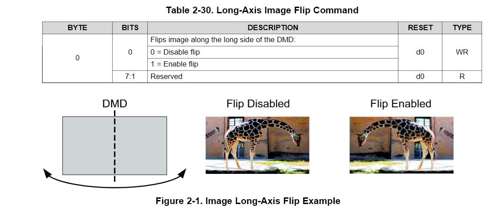
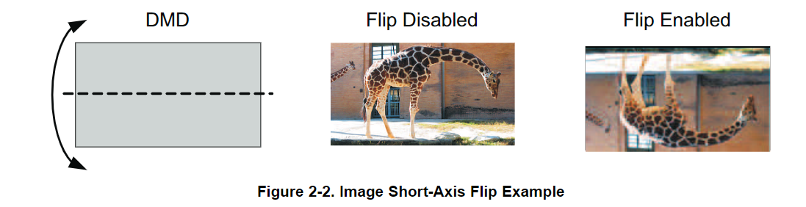
DLP 显示序列由几个参数组成，这些参数指示 DMD 的加载和对 LED 的 PWM 控制。 DLPC350 支持两种主要序列模式：
显示模式选择命令（第 2.4.1 节）在视频或模式显示模式之间进行选择。
在视频模式下，DLPC350 通过 30 位 RGB 或 FPD-link 接口在 120 Hz 时支持高达 1280 × 800 像素分辨率。 DLPC350 处理数字输入图像并将数据转换为适合 DLP4500 DMD 的格式。
DLPC350 处理功能包括格式转换和视频增强模块（见图 2-4）。请注意，并非所有这些功能都可用于用户控制。在图案显示模式下，DLPC350 提供高达 120 Hz 的高速、像素精确的 912 × 1140 分辨率，可绕过视频处理和图像增强功能。该模式支持通过 DLPC350 24 位 RGB 或 FPD-link 接口和闪存进行数据输入。此功能专为结构光、增材制造或数字曝光等技术而设计。 DLPC350 可以显示一组图案，并在显示这些图案时向相机发出信号以进行捕捉。图 2-4 显示了 DLPC350 框图以及视频和模式显示模式的主要功能块。表 2-48 列出了允许的位深度、模式数量和最大模式速度的模式组合。
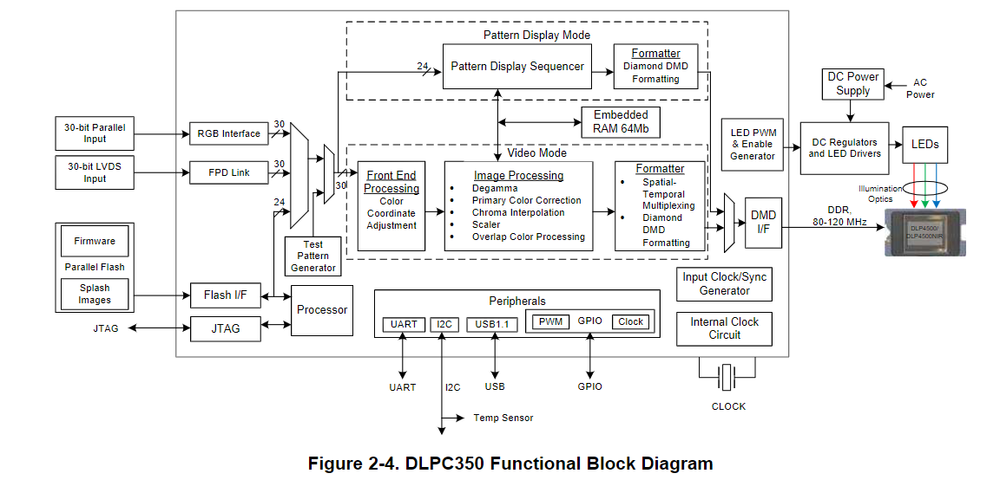
Splash Image：这到底是什么意思？1 张 24 位图像？
结果，单个视频帧由一系列位平面组成。因为 DMD 反射镜 c 是打开或关闭的，所以通过打开和照射与位平面中的位设置相对应的反射镜上的光来创建图像。使用二进制脉宽调制，通过控制镜子打开和照明的时间量来再现颜色的强度级别。对于输入到 DLPC350 的 24 位 RGB 帧图像，DLPC350 创建 24 个位平面，将平面存储在内部存储器缓冲区中，并在下一帧（一次一个位平面）将平面发送到 DLP4500 DMD .根据位平面的位权重，DLPC350 控制该位平面暴露在光线下的时间。位平面被照亮的时间与位平面的强度成正比。 DLPC350 交织和交错位平面、时隙和彩色帧以提高图像质量。请注意，此功能在视频模式下自动执行，用户无法调整。对于不需要这种图像增强的其他应用，视频处理算法被绕过并用一组特定的位平面代替。模式的位深度被分配到相应的二进制加权时隙中。此外，输出触发信号与这些时隙同步，以指示何时显示图像。对于结构光应用，该机制显示一组图案并向相机发出信号，以捕捉这些叠加在物体上的图案。如图 2-7 所示，DLPC350 在内部存储器缓冲区中存储了两个 24 位帧。这个 48 位平面显示缓冲区允许 DLPC350 将一个 24 位缓冲区发送到 DMD 阵列，而第二个缓冲区从闪存填充或通过 24 位 RGB 接口流入。在流模式下，DMD 阵列显示前一个 24 位帧，而当前帧填充显示缓冲区的第二个 24 位帧。在显示一个 24 位帧后，缓冲区会旋转并将下一个 24 位帧访问到 DMD。因此，显示的图像是通过 24 位 RGB 并行接口流式传输的数据后面的 24 位帧。
在图案显示模式下，DLPC350 支持 1、2、3、4、5、6、7 和 8 位图像，分辨率为 912 × 1140 像素，通过 24 位 RGB 或 FPD 流式传输-link 接口或存储在闪存位置。以下命令仅在图案显示模式下受支持：
注意：必须使用 validate data 命令验证设置中的任何更改。
注意：停止时，在“开始”之前，至少必须再次发送模式显示 LUT (0x75 I2C) 和模式显示查找表，然后是验证。如果图案曝光和帧周期不相等，则图案曝光时间必须比帧周期小 230 μs。
是否需要发送两次 LUT
模式显示 LUT 控制命令控制存储在查找表中的模式的执行。在执行此命令之前，请停止当前模式序列。执行此命令后，在开始模式序列之前发送一次验证命令（I2C：0x7D 或 USB：0x1A1A）
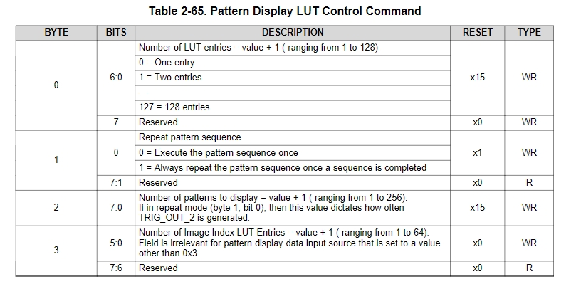
DLPC350 支持模式显示查找表 (LUT)，该表定义了 Pattern 序列和序列中每个 Pattern 的配置参数。要创建此 LUT，程序员必须先设置显示模式、触发模式、曝光、帧速率等，然后再将数据写入 LUT。正确配置后，Pattern Display LUT Access Control 命令会写入 LUT
下面提供了一些可能的解决方案：
相机模型和相机标定
相机模型
针孔模型
相机标定
基本矩阵与单相机标定
三维重建的三件事：二维图像采集、三维重构、点云后处理
面结构光三维重建
系统标定
双目立体视觉
系统标定和极线矫正
其他三维重建技术（简要介绍）
运动恢复图像
点云后处理技术（简要介绍）
点云滤波技术
11 月 1 日-11 月 6 日
救命：其实是 DLP 检查程序的延迟不够，且无法绝对性的判断是否已经 Ready；
蝴蝶效应中，要找到那只蝴蝶，真的太难了！！！！
```cpp
// 原来的：延迟太短、超时超次也能正常退出
bool DLP::CheckPatternSequence()
{
unsigned int status;
bool ready;
if (DLPC350_StartPatLutValidate()<0)
{
std::cout << "error validating LUT data" << std::endl;
return false;
}
int re_check = 5;
for (int i = 0; i < re_check; i++) // 重复两次检查
{
if (DLPC350_CheckPatLutValidate(&ready, &status) < 0)
{
std::cout << "error validating LUT data" << std::endl;
return false;
}
if (ready)
{
std::cout << "Is Ready." << std::endl;
break;
}
else
{
Sleep(1000); // 休眠10ms，重新检查
}
}
return true;
}
// 改为
bool DLP::CheckPatternSequence()
{
unsigned int status;
bool ready;
if (DLPC350_StartPatLutValidate()<0)
{
std::cout << "error validating LUT data" << std::endl;
return false;
}
int re_check = 5;
for (int i = 0; i < re_check; i++) // 重复两次检查
{
if (DLPC350_CheckPatLutValidate(&ready, &status) < 0)
{
std::cout << "error validating LUT data" << std::endl;
return false;
}
if (ready)
{
std::cout << "Is Ready." << std::endl;
std::cout << "Status:" << status << std::endl;
break;
}
else
{
if (i == re_check - 1)
{
return false; // 超时、超次异常退出
}
std::cout << "No Ready." << std::endl;
Sleep(1000); // 休眠10ms，重新检查，休眠足够时间
}
}
return true;
}
```
近期安排
完成标定板的对公转账
一年规划
高效编码策略
一年预期成果
产品：
近期安排
星期一之前完成专利申请书
？？？？？
马桶溅水怎么办？
11 月 7 日-11 月 13 日

| 类型 | 控制方式 | 控制精度 | 速度 | 价格 | 其他特点 | | -------- | -------- | -------- | ---- | ---- | -------- | | 有刷电机 | | | | | | | 无刷电机 | | | | | | | 步进电机 | | | | | | | 伺服电机 | | | | | |
$$ x=pz=mz*\pi $$
其中：p 齿距
m 齿轮模数(单位 mm)；
z 齿轮齿数；
，单转位移
$$
x=mz\pi=125\pi=7.85(cm/r)
$$
，预计总耗时
$$
t=2\sim 3s
$$
.
求电机转速(负载转速)范围
$$ N=\frac{L}{tx}=\frac{90}{[2,3]7.85}=[5.73,3.82]r/s=[343,229]r/min $$
如果单转位移
$$
x=mz\pi=116\pi=5.03(cm/r)
$$
，负载转速范围
$$
N=[536,357]r/min
$$
11 月 14 日-11 月 20 日
当我们面临一个艰难决策时，为了克服感情的偏见，可以想一想如果做出了这个决策，10 分钟后的感受是什么，10 个月后的感受是什么，10 年后我们的感受又会是什么？
举个例子。有个青年女性叫安妮，她有个男朋友叫卡尔。安妮 36 岁，卡尔 45 岁，安妮没结过婚，卡尔是离婚带一个女儿。两人正式交往已经九个月了，安妮对卡尔非常满意，想要赶紧结婚生孩子，但是卡尔的态度不明朗。事实上，卡尔就没让安妮见过他的女儿。这可能是因为卡尔经历了离婚，感情受到了创伤，他不想让自己的女朋友干扰孩子。两人相处以来，还没有谁说过“我爱你”这句决定性的话。
这个周末，安妮和卡尔要一起出去度假，安妮认为这是一个摊牌的机会。但是安妮有点拿不定主意，就请希斯兄弟帮忙。
希斯兄弟判断，安妮现在的纠结，完全是短期情绪的作用。她有点紧张，有点害怕，特别是担心如果卡尔拒绝，她怎么办。
“10/10/10 法则”最适合克服短期情绪。希斯兄弟就让安妮考虑，如果跟卡尔表白，自己十分钟、十个月和十年之后会怎么看待这次的决定。
安妮说，十分钟之后，我会很紧张，但是我也会很自豪自己说了；十个月之后，就算被卡尔拒绝了，我大概也不会后悔；十年之后，这次表白可能根本就不是个事儿，或者那时候我跟卡尔生活在一起，或者我跟别人生活在一起。
这么一分析，结论当然是向卡尔摊牌。这其实就是一种旁观者思维，站在一个远距离考虑问题，所有短期的情绪，什么害怕、紧张，可能就都不重要了
如果以上方法都没有用，请思考你的“初心”
非 RTX 显卡到底能不能用？？？
[X] 学习将一个算法封装成 DLL，并预留一个函数接口
我们在编写项目过程中，有时难免需要将项目核心源码进行加密，那么如何利用 VS 实现呢？最佳的策略便是将核心代码编译成动态库 dll 了
C/C++ warning C4251: class ... 需要有 dll 接口由 class“..” 的客户端使用 - YZFHKMS-X - 博客园
L298N、电机、单片机的线路连接(51、stm32 程序)_霄耀在努力的博客-CSDN 博客
简介 - 2018 - SOLIDWORKS 帮助
欢迎使用 SOLIDWORKS 在线帮助 - 2022 - SOLIDWORKS 帮助
齿距 p=分度圆周长\pid / 齿数 z = 模数 m 齿数 z*\pi /齿数 z
$$ p=dC/z=m\pi $$
齿轮齿距=模数*pi
国标铝型材和欧标铝型材归根到底都是采用6063-T5材质的铝棒挤压而成，所以两者除了截面，米重，价格之类的区别之外，其挤压工艺，使用的材质，氧化过程等等一样的。
11 月 21 号-11 月 27 号
c 语言创建 dll，c 语言调用 dll_befreedomjustice 的博客-CSDN 博客_c 语言调用 dll 函数
Matlab 函数编译成 dll 供 c 调用 - redips - 博客园
问题从哪里来，我们从来不问（也是我最需要去寻找的）
11 月 28 号-11 月 30 号
简介：
应用：
描述：RK3308 是一颗针对专门音频和 IoT 应用而设计的主控芯片
瑞芯微 RK3308 产品详细信息介绍,RK3308 芯片性能分析_zhangbijun1230 的博客-CSDN 博客_rk3308
开发套件/开发手册
欢迎使用 ROC-RK3308-CC 开发手册 ‒ Firefly Wiki
描述：4G 16 颗粒
【科普】内存颗粒版本判断方法和编号解析 V2.0_内存_什么值得买
描述：ES7210 是一颗 4 路音频 ADC 采集芯片
ES7210 四路音频麦克风 ES7243 两路音频麦克风 6 麦克风阵列方案 - 立创社区
开发套件/开发手册
文档：ES7P202x◆-上海东软载波微电子有限公司
12 月 1 日-12 月 4 日
ROS 机器人小车
1000-2000
500-1000
2000+
产品实拍图片、结构设计经验总结、……
芯片选型、电路设计、……
开发套件/开发手册：
NS4263 3Wx2 双声道 AB/ D 类双模音频功率放大器附加耳机模式(SOP-16)_深圳市纳芯威科技有限公司
工作流程图、可能的软件设计、……
12 月 5 日-12 月 11 日
创造活动有三个步骤
沉浸。完全集中注意力，把自己沉浸在你正在研究的这个内容之中；
Q：为什么要压力？
压力是故意给的，压力是“挑战”不是“威胁”；压力是脱离舒适区，完成一个具有挑战的工作才能避免填鸭式的学习和工作，才不是被动的接受；
事情太简单会无聊、事情太难会焦虑
Q：为什么要休息？
整个过程非常简单，关键词是“恢复”。这个道理我们以前也说过，当然是因为人体是一个“反脆弱”系统。能恢复过来，就是反脆弱，会变得更强大；恢复不过来，就练废了。
常规休息方法
散步：散步给大脑提供了打扰，就算站起来也能起到很好的效果
科学决策的四个步骤
确认有哪些选项：扩充你的选项
那就是，你要把多个选项都摆在桌子上，要选就一起参选
这不是废话。比如说你要设计一个什么东西，找了两个设计小组。第一组，每想出来一个什么方案就给你看，然后你提各种意见，他们拿回去再修改，再提出不同的方案。第二组，一次性地给你提供了好几个方案，同时摆在你的面前，让你选。你选定一个，他们回去再略做修改；结果实验表明，第二组的做法效果要好得多。都摆出来，哪个好哪个不好一目了然。一个一个比较，费时费力而且到后面你会忘了前面的
人脑在听到对方重复自己话的时候，感觉就是“你希望我给你解释一下”，会忍不住多说一些话来解释
四步走：重复对方的话，用深夜电台主持人的声音，开口先说对不起，然后沉默 4 秒钟
说出对方此刻痛苦的感受，策略性的同情心，能够帮助对方和你之间建立信任
对方不说话的时候，只需要标注对方的痛苦，把对方此刻的情绪讲出来
先把对方对自己最不满的地方讲出来，对方就没话说了，再盯着说就没意思了。
让对方感觉自己在掌控这场谈话，然后就会更富建设性的思考。用不去做引导，目标达成率更高
把前面的招数加在一起，然后加一个总结。
”我希望我们这个谈判是公平的“，给对面公平的感觉
要找到谈判对象的时限
步骤：
1、设定他们的情绪，说自己没有钱，那怎么办？（要问对方）
2、让对方先出价，要讲究公平，对方出少了可以追加，要讲究长期的合作
3、我们出价的时候，要划定一个范围
4、操作非价格条款
5、说出特定数字（不说 5000，而是说 4751 元，可能还要沉默一会说“我算一下”）
6、给出一个惊喜礼物【觉得亏了】
1、设定你的目标价
2、第一次出价是目标价的 65%
3、计算好准备三个可能增加到的价格，分别是目标价的 85%，95%，100%，三次让步。
在提价之前，用同理心原理和各种方法说不来对抗对方。
谈到最后根们就没有良好的执行，因为双方理解本来就有偏差，可能还有情绪
如果对方做出很多不理智的言语和行动的时候，你需要用校准问题的方法
例子：对方生气要走了，应该说你打算离开是为了什么，而不是你不要走（是命令）
多用 how 和 what，少用 why
多用“怎么才能”和“是什么”，少用“为什么”（因为有种被质疑的感觉）
向对方示弱，要引发堆放大量的言语，让对方对方这个方案的达成做出更多的贡献
一个人在表达信息的时候
7% 是通过语言；38% 是通过语调；55% 是通过肢体和表情表达
为了确保执行，要更多用校准和标注的方法
比如：你告诉我觉得这事情可以执行，但为什么我看到你是犹豫的表情？
三次原则：讨论一个协议的时候，至少要听到三次 yes
以”我“来开头的人，说“我”的次数越多，说明这个人越来越不重要
真正的大佬都是说“你”“你们”“这个事情怎么做”
用户指南（官方）：
PS：中文文献据说也有自动导入方法，可自行百度
PS：中文文献据说也有自动导入方法，可自行百度
支持 MAC、IOS、iPadOS 多端同步，拥有 400M 免费云空间（大约可存储约 250 篇文献）
Zetero 常用插件：Zotero 中文社区
https://github.com/windingwind/zotero-pdf-translate
谷歌翻译 API 的翻译效果最好，但需要翻墙
硬件设计流程如下
在开始设计前思考所需要使用到的材料
标准件
铝方、角码
3D 打印
设计软件：任何可以导出 3D 格式（如 STL）的 CAD 软件（例如 Solidworks、犀牛、Free3D、Creo）
干 CNC 编程的会用到哪些软件? - 知乎
CNC 加工需要注意的事项有哪些？
要实现 CNC 数控模型，你应该知道的事情
机械设计一般在批量不大的机械装备、非标自动化设备、机器人等行业。
机械设计运动构建居多
机械设计示意图
工业设计主要关注产品的外观，包括形态、位置关系、颜色等

工业设计示意图
（产品）结构设计示意图
-
不同的主控芯片有推荐使用不同的编程软件
嵌入式系统
Linux
创业的方向：
选择比努力重要得多
发现蓝海
大蓝海：互联网线上购物、共享单车【发现大蓝海，需要敏锐的观察力】
蓝海需要群众基础：中国人对“上火”的概念是有基础的
【如果选择单独由这种原因而选择的方向是最糟糕的】
ROS2
多机器人系统
ROS2 更适合部署在 Linux 系统上
Linux->Ubuntu
is shown to outperform both standard ICP and point-to-plane
显示优于 ICP 和点对面
A striking illustration of this is the fact that sth
这个事实的一个显然的例证是……
the implicit assumption of full overlap of the shapes
形状完全重叠的假设
It is unique in that sth
独特之处在于【技术上的创新性】
详解最大似然估计(MLE)、最大后验概率估计(MAP)，以及贝叶斯公式的理解_nebulaf91 的博客-CSDN 博客_最大似然概率
与人谈判遇到的麻烦人
为何物：
美国临床心理学家埃尔比特·艾利斯在 20 世纪 50 年代提出。他认为决定人情绪的不是事物本身，而是受对事物看法的影响。
有何用：
用这套模型管理好我们的情绪，很多时候可以避免不必要的麻烦。
何时使用：
当你被事情影响，产生负面情绪，可以用此模型觉察下，是否信念出现错误。
模型解析：
通常人们会认为诱发事件 A 直接导致了人的情绪和行为结果 C，发生了什么事就引起了什么情绪体验（如：很多时候很多人会认为是因为这个事情，所以我很生气。）。然而，你有没有发现同样一件事，对不同的人，会引起不同的情绪体验。
不合理的信念有哪些？
常见的三种不合理信念，容易引起负面情绪：
它是指人们常常以自己的意愿为出发点，认为某事物必定发生或不发生的想法。
例如：“我必须获得成功”、 “一定不能出错”。
- <del>2、过分概括化</del>
以某一件或某几件事来评价自身或他人的整体价值。
例如一次失败的经历就否定自己一无是处，“我连这么简单的事情都做不好，我太没用了。”
- <del>3、糟糕至极</del>
认为如果一件不好的事发生了，将是非常可怕、非常糟糕，甚至是一场灾难。
例如“考试失败，工作不顺，我的人生已经失去了意义”。
思考启示：
毛主席曾说：感觉只解决现象问题，理论才解决本质问题。
运用步骤：
运用 ABC 理论的五个步骤；
步骤一；找寻 A 即事件本身（找到导致你负面情绪的事件）
步骤二；描述 C 即情绪状态（是绝望还是伤心）
步骤三；找到产生 C（情绪状态）的原因 B（视角，看法）
步骤四；自我反驳，对于事件本身（A）的看法视角（B）进行反驳
例；工作不力被领导责骂，觉得自己这辈子都做不好工作了
反驳；虽然这次工作没有做好，但这不代表以后都做不好工作，人是会成长的，找到失败原因，下次努力便是。
步骤五；树立新信念（采取新的看法和视角）
如何调节：
1. 正确看待评判和指责
被批评的时候，会感到自责和委屈，陷入到一种负面的情绪中。但最终目的是为了避免重复犯同样的错误，但只是伤心难过，并不解决问题。
对于管理者而言，批评别人的时候也不能掺杂太多情绪，要明确指责的意图和对别人的期望。
2. 接受自己的坏情绪，寻找合适的排解方式【承认问题才能去解决问题】
人都有低落的时候，关键在于不能让它控制你的行为，无限蔓延。在职场中，时刻保持冷静的心态是很重要的。可以通过合理的方式排遣坏情绪，比如出去透透气，喝点饮料，或者找个熟人吐吐槽。
3. 学会辩证的看问题
任何一件事都有好坏两面，在看到不好一面的同时，要看到好的一面。比如我们不小心打破了一个杯子，要想还好没有扎破手。我们被别人拒绝了，还好，人家没有浪费大家的时间，还可以再找其他机会。
-
模型案例：
比如：A 说：我不想上班，不想打工，打工就是被老板剥削，就是被当成工具人。
但如果你换一个 B（思维），不要觉得打工就是剥削。古话曾说：“六经注我”，借用一下说法就是，工作里能接触到的一切资源为我所用；沉淀我的能力，优化我的履历；布局我的未来；事儿真砸了也是花老板的钱。这样一想，是不是被剥削的就是老板了？那工作的状态是不是就不一样了。
由于现有技术无法控制猫 A 活着还是死去，所以量子纠缠无法传递任何信息；如果要想给观察猫 B 的人传递额外的信息，就要想办法将”某种能量”传递进猫 A 内部，而不是让猫 A 把信息能传递给我们
信息能
$$
f=x^2
$$
是一个典型的对称模型
$$ f=x^2\rightarrow f=(x)^2=(-x)^2 $$
机器人赛道火热的主要原因\现实背景
全球人口红利消失。工厂招人困难，出现用工荒。
中国是全球机器人、自动化以及视觉、工业软件最大的市场之一。
智慧工厂三部曲/工业机器人的演化
传统自动化工厂：一条产线只能生产一种产品
柔性自动化向数字化工厂跃迁的关键是软件、视觉两大核心。
投融资
2022 年截止到 9 月 1 日，总融资规模为 487.8 亿元
服务机器人行业发展的现实背景
成本。2012 年激光雷达成本约 1.8 万人民币，现在 300~400 人民币。服务机器人成本的急剧下降，低于服务行业人工成本之后，落地成为可能。
补充：
大环境对企业和行业影响巨大，比如酒店、旅游行业。企业的本质是应对。最灵活的团队，凸显壁垒，以更轻的方式去做业务，比如开拓国内更多应用场景、海外市场拓展。企业的本质在于人效、抗风险能力、回款，自身的存活能力更为重要。
服务机器人的演化
第一代应用于博物馆等场景的讲解引导
未来「底盘 + 机械臂 + 视觉 + 行业应用」的 3D 机器人
服务机器人的方向
B 端
清洁市场
C 端
清洁市场
2D 清洁和 3D 清洁：2D 清洁——连续场景、连续对象；3D 清洁——离散场景、连续对象
2D 整理和 3D 整理：2D 整理——连续场景、离散对象；3D 整理——离散场景、离散对象
技术难度排序：
B 端 <C 端
清洁 < 整理
2D<3D
推论，技术难度由简到难：
投融资
2022 年截止到 9 月 1 日，总融资规模为 966 亿元

家居整理机器人方向，尚没有典型的投资事件发生，出现这种现象的原因较大概率是因为技术不成熟，其次是对该方向的探索太少。
机器视觉
小部分高精度相机镜头以及高性能处理器还是比较依赖于国外产品
国产替代是必然的趋势，并且愈演愈烈。国内品牌出海也是必然的趋势。
电机
对进口零部件依赖逐步降低，电机早已实现国产化，斜波减速机、激光雷达也已经国产化。消费商用级芯片没受太大影响，特定芯片仍需依赖进口。但一些领域产业链还不成熟，比如斜波减速机主要是绿地和来福。
控制系统\操作系统
机器人底层环节相对薄弱。控制系统是其中之一
机器人底层是非常庞杂的体系，涉及成本商业的考量，国有替代不是很容易
芯片
几个关键芯片受国外影响较大，例如主从控制机器人的控制器通讯协议和芯片。补足底层短板需要各个层级力量的共同努力
12 月 12 日-12 月 18 日

国辰社区服务机器人
厂商：智能机器人_巡检机器人_视觉检测设备_服务机器人_重载 agv 小车_杭州国辰机器人科技有限公司
阿泰因
厂商：阿泰因
高仙：楼宇配送机器人
厂商：上海高仙自动化科技发展有限公司(gs-robot)
极光一号
厂商：麦岩智能 MAXROCK.ROBOT | 未来社区共创者 专注打造未来社区智能服务机器人
垃圾转运机器人：垃圾转运机器人今深圳“上岗”:一次可倒 300 公斤垃圾-媒体宣传-深圳市城市管理和综合执法局网站
厂商：浙江迈睿机器人有限公司
“上岗”社区的服务型机器人，何时出现百亿独角兽？
在劳动力逐渐短缺的趋势下，社区清洁成为了社区服务中一大痛点
物业也向 AI 要“革命” 社区机器人前景如何? | 雷峰网
物业公司也开始与智能时代接轨：碧桂园
噱头很多，落地很少（或者是很难找得到）
12 月 19 日-12 月 25 日
参考示例
使用流程
Step1：使用p=inputParser定义一个输入解析器
```matlab
varargin={’myParam',100}; % 输入的元胞数组
P=inputParser; % 定义一个输入解析器
p.addParameter('myParam',100); % 在输入解析器模式中添加可选的名称-值对组参数
p.parse(varargin{:}); % 将参数名称和值传递给parse
p.Results.paramName; % 输出参数名称和值
```
博客目录与概览_von Neumann 的博客-CSDN 博客
切比雪夫距离（Chebyshev Distance）为 L ∞ L\inftyL∞ 度量，是向量空间中的一种度量，二个点之间的距离定义是其各坐标数值差绝对值的最大值。以数学的观点来看，切比雪夫距离是由一致范数（或称为上确界范数）所衍生的度量，也是超凸度量的一种：
$$ D(x,y)=\max(∣x_i−y_i∣) $$
国际象棋棋盘上二个位置间的切比雪夫距离是指王要从一个位子移至另一个位子需要走的步数。由于王可以往斜前或斜后方向移动一格，因此可以较有效率的到达目的的格子。下图是棋盘上所有位置距王位置的切比雪夫距离。
Q：ICP 迭代中使用 SVD 分解求 RT 矩阵的数学原理是什么？
A：blog.csdn.net
Q：ICP 算法是否允许两个点云的数量不一致，为什么？
A：允许，基于 Kdtree 的最近点查找会统一点对数量。如果 A.count > B.count(tree)，A 中的部分点会对应 B 中的同一个点；如果 A.count < B.count(tree)，A 中的部分点没有任何对应。
Q：为加快迭代速度，通常会对点云进行采样，什么样的采样方式最合适，为什么？
A：采样方式有如下几种：1. 随机下采样；2.体素下采样；3.均匀采样；4.几何采样
不同的采样方式适应不同的场景，在研究 ICP 时，研究采样方式更像是一种工程作业，而不是学术研究
学术研究要有重点
matlab
<del> if iter == 1 % 优化：初始质心重合</del>
<del> model_center=mean(model); % model集的质心点</del>
<del> scene_center=mean(scene); % scene集的质心点</del>
<del> T = model_center' - scene_center';</del>
<del> scene = (scene' +T)';</del>
<del> end</del>
占 scene 总点数
$$
Sc_n
$$
的比率，即
$$ O=\frac{Sc_{r}}{Sc_{n}} $$
这些都是工程，不用写在论文中
matlab
<del> if overlaprate < 1</del>
<del> [d,idx] = sort(d);</del>
<del> idx = idx(1:floor(overlaprate*num_points)); % 使用floor向下取整</del>
<del> d = d(1:floor(overlaprate*num_points)); % 根据overlaprate去除了部分d</del>
<del> scene_idx = scene_idx(idx);</del>
<del> model_idx = model_idx(idx);</del>
<del> end</del>
推荐阅读：《如何做出正确决定》
什么才是点云配准中的学术问题？
上述这些问题都是一个科研课题，在研究其中一个时，不要太在意其他问题，使用最简单最常用的即可。进行对比实验室也要保证控制变量。
科研的关键词是“专注一点”，工程的关键词是“解决问题”
不要在做科研时，使用组合策略，只专注一点！
学术研究流程：
matlab
<del>A = [1,2,3,4];</del>
<del>min(A); </del>
<del>B = [1,2,3;</del>
<del> 3,4,5;</del>
<del> 5,6,7]; </del>
<del>min(B); % 按列取最小：[1,2,3];</del>
<del>min(B,[],2) % 按行取最小：[1,3,5];</del>
```matlab
function R=creatR(x_theta,y_theta,z_theta)
R_x = [1,0,0;
0,cos(x_theta),-sin(x_theta);
0,sin(x_theta),cos(x_theta)];
R_y = [cos(y_theta),0,sin(y_theta);
0,1,0;
-sin(y_theta),0,cos(y_theta)];
R_z = [cos(z_theta),-sin(z_theta),0;
sin(z_theta),cos(z_theta),0;
0,0,1];
R = R_xR_yR_z;
end
```
matlab 输出显示
fprintf('点云重叠率设置：%d\n',num2str(overlap_set));
人心定理：爱恨是有惯性的
12 月 26 日-12 月 31 日
所以近期的事务安排就是：
一朵玫瑰正在马不停蹄地成为另一朵玫瑰，你是云、是海、是忘却，你也是你曾经失去的每一个你
四元数，是简单的超复数。 复数是由实数加上虚数单位 i 组成，其中 i²= -1。 相似地，四元数都是由实数加上三个虚数单位 i、j 和 k 组成，而且它们有如下的关系： i² = j² = k² = -1， iº = jº = kº = 1 , 每个四元数都是 1、i、j 和 k 的线性组合，即是四元数一般可表示为 a + bi+ cj + dk，其中 a、b、c 、d 是实数。
对于 i、j 和 k 本身的几何意义可以理解为一种旋转，其中 i 旋转代表 Z 轴与 Y 轴相交平面中 Z 轴正向向 Y 轴正向的旋转，j 旋转代表 X 轴与 Z 轴相交平面中 X 轴正向向 Z 轴正向的旋转，k 旋转代表 Y 轴与 X 轴相交平面中 Y 轴正向向 X 轴正向的旋转，-i、-j、-k 分别代表 i、j、k 旋转的反向旋转
正态分布函数：正态分布(从 1 维到 n 维) - _yanghh - 博客园